SmartTools アドオン解説書
SmartRig Suite（スマートリグ スイート） 解説書
版 1.0.0 ／ 2026年11月18日 ／ Blender 5.1.2 用
SmartRig Suite は、別に導入した Auto-Rig Pro（リグを自動で組むアドオン）を安全に呼び出し、足りない仕上げの道具を足すアドオンです。リグとは、キャラクターを動かすための骨組みのことです。関節の潰れ直し、顔と目、髪や衣装の鎖、揺れの焼き込み、各種の検査ができます。サイドバーの「Smart Rig」タブに、見出しが「1. 準備とパーツ」から「6. アニメーション」まで作業の順に並んでいます。上から順に進めれば、新しいキャラクターのリグが仕上がります。インストール・日本語化・N パネル（サイドバー）の開き方・「？」ヘルプの共通の使い方は、全体仕様書の該当の章を見てください。
同じ手首の曲げ方で、袖口の追従量を見比べる
端の割合を片側1.0、もう片側0.4にして同じポーズを比較。手首が曲がったとき、左右の袖口がどれだけ追従するかを確認できます。
- 同じ手首ポーズ
- 袖口の割合を1.0と0.4に
- 追従を比較
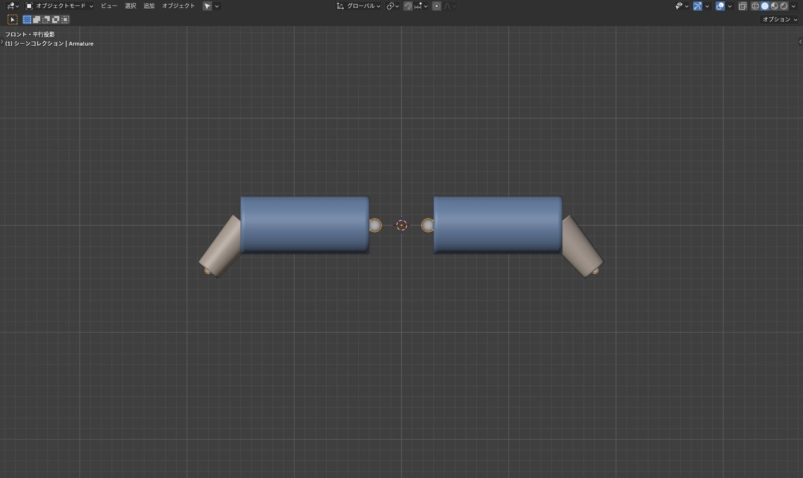
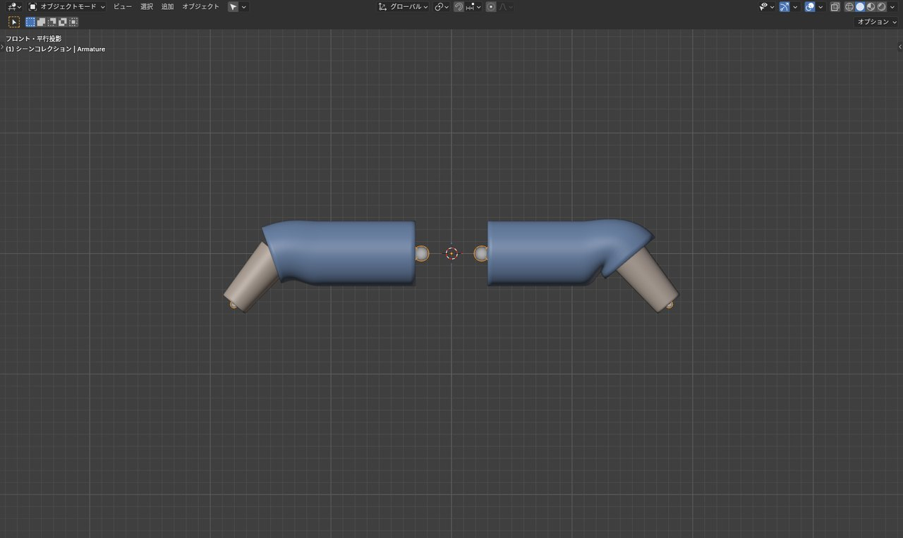
スキニングの仕上げで袖に悩む場合は、同一ポーズで端の割合だけを変えた結果を比較できます。Auto-Rig Pro連携を使う機能には別途導入が必要です。 比較対象の資料 · Auto-Rig Pro
試す前に 衣装と骨の条件を本文で確認。Auto-Rig Pro連携を使う場合は別途導入する。
1. このアドオンでできること
Auto-Rig Pro でキャラクターにリグを組む手順を、準備から揺れの焼き込み・動きの検査まで 1 つのパネルに順番に並べた連携アドオンです。
- 外部ツール（Auto-Rig Pro、リグツール、Proxy Picker、AI_win）が使えるかを一目で確かめる
- 作業の対象にするリグと素体メッシュを決め、事前検証で問題を洗い出す
- キャラクターをコレクション単位のパーツ（衣装）に分け、骨と一緒に表示・非表示・削除する
- Auto-Rig Pro の参照リグ追加・マーカー推定・検出・Match to Rig・バインドを、前提を確かめてから呼ぶ
- 靴底の高さだけキャラクター全体を持ち上げる
- 仕上がったリグ付きキャラクターの大きさを、作り直さずに変える
- 肘・膝・手首の曲げで肌が潰れないように補助ボーンを設定する
- 頂点のウェイト（骨の効き具合）を数値で編集し、品質を監査する
- 目のリグ・眼球の結合・瞼のピボット・顔の効き範囲・補正シェイプキー・瞼の落ち影を整える
- 髪や垂れる部品にボーンの鎖を作り、衣装を肌のウェイトから結合する
- スカートや上着の裾に短冊ボーンを付け、脚を避けさせる
- 当たり判定のカプセルを体に合わせ、鎖の揺れをキーフレームに焼き込む
- スカートにクロス（布のシミュレーション）の選択肢を付ける
- 姿勢を保ったまま IK と FK を切り替え、モーションキャプチャーでリグを試して悪い所を探す
- Proxy Picker の対応を割り当て・監査・書き出しする
- 新しいキャラクターに、Auto-Rig Pro で体・顔・髪・衣装までリグを組む
- 肘や膝を深く曲げた時の潰れを直す
- 髪やストラップの揺れをアニメーションに焼き込み、他のソフトへ書き出せる形にする
- 衣装を着替えさせるため、パーツごとに表示を切り替える
- モーションキャプチャーのクリップを流して、リグの弱い所を見つける
ひと目で分かる例
このアドオンを使うと、画面は次のように変わります。くわしい操作は 5 章の各機能の「実例」で説明します。
実例しっぽに骨の鎖を作る（スザンヌ＋骨 4 本と、後ろに垂れたしっぽで試した様子）
頭の後ろに垂れたしっぽ（リグに結び付いていない 1 本の筒）を選んで「鎖を作る」を押すと、しっぽに沿って骨の鎖ができ、リグへの結び付けとウェイトも一緒に済みます。
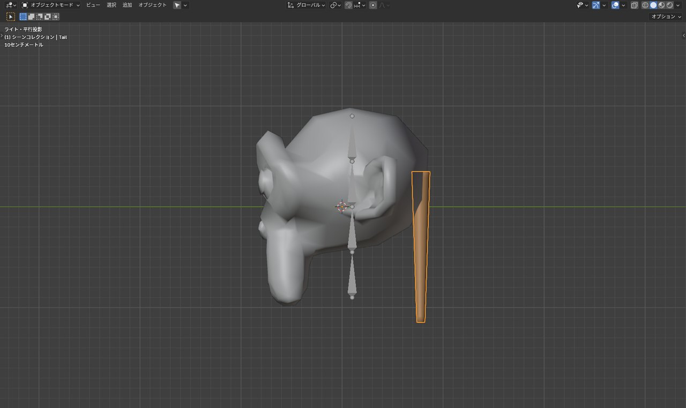
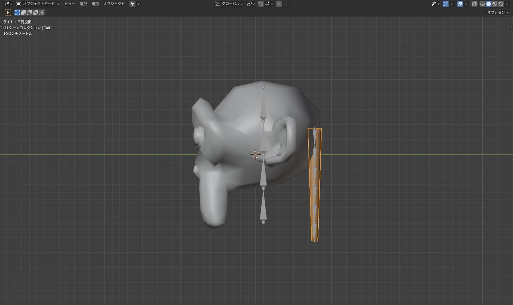
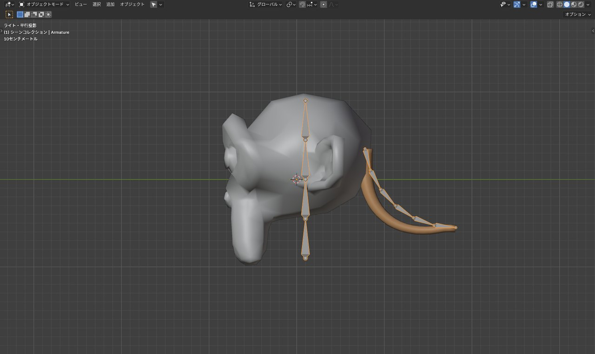
- 「1. 準備とパーツ」＞「ワークフロー対象」の「対象リグアーマチュア」にリグを入れます。
- オブジェクトモードでしっぽのメッシュを選びます。
- 「4. 髪・衣装・固い部品」＞「選択パーツに鎖を作る」で、形を「ストランド」、名前を「tail」、「本数」を 6、「親」を head、揺れを「短い髪」にします。
- 関節の欄を「均一」にして、「鎖を作る」を押します。
見どころ：「後」では、しっぽの中に 6 本の骨が根元から先まで並びます。3 枚目は鎖の骨を少し曲げた様子で、しっぽのメッシュが骨と一緒に曲がるので、結び付けとウェイトが済んでいることが分かります。
実例首を傾けると、しっぽが勢いで揺れる（スザンヌ＋骨 4 本と、鎖を作ったしっぽで試した様子）
体のアニメーションを付けた後で「揺れを焼く」を押すと、鎖の骨に揺れのキーフレームが書き込まれ、しっぽが首の動きに引きずられて揺れるようになります。
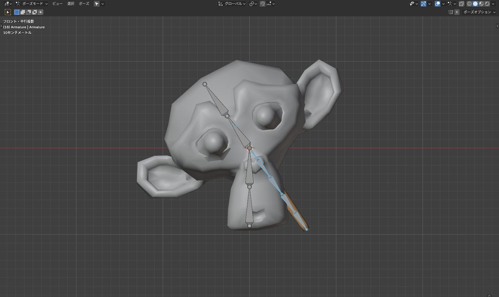
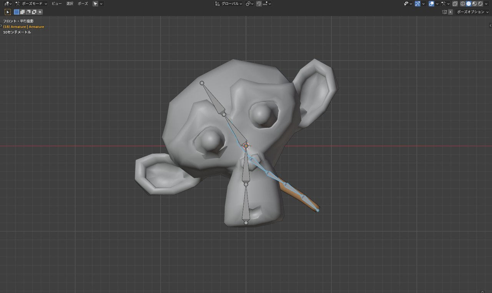
- 揺らす部品に鎖を用意しておきます（この図の練習用のしっぽには、リグを作る人向けの「選択パーツに鎖を作る」で鎖を作りました。髪や揺れものに鎖が最初から入っているキャラクターのモデルでは、この手順は要りません）。
- 首（neck の骨）を横へ傾けるアニメーションを付けておきます。
- ポーズモードで、しっぽの鎖の骨を選びます。
- 「5. 揺れ・当たり判定・クロス」＞「揺れを焼く」で、「床で止める」をオフにします（この場面には床がありません）。
- 同じ枠の「揺れを焼く」を押します。
- タイムラインを動かして、揺れの様子を確かめます。
見どころ：どちらも同じフレーム（首を傾け終わった直後）です。焼く前はしっぽが首の骨と一緒に固く傾くだけですが、焼いた後は、しっぽが動きの勢いで遅れて振られ、首の骨とは別に動いています。
2. 目玉の機能
このアドオンならではの機能を、図に番号を付けて説明します。図の中の番号と、図の下の一覧の番号が対応しています。図を押すと大きく表示されます。設定の一つ一つは 5 章の各見出しで説明します。
2-1. パーツを選んで押すだけで、骨の鎖ができるいちばんの売り
揺れる部品に骨を入れるには、ふつうは骨を 1 本ずつ置き、リグに結び付け、ウェイトを付ける作業が要ります。「選択パーツに鎖を作る」では、ストラップ・三つ編み・裾などのパーツを 1 つ選んで「鎖を作る」を押すだけで、パーツに沿った骨の鎖ができ、リグへの結び付けとウェイトも一緒に済み、揺れの設定も鎖に覚えます。関節はメッシュの区切りに置き、固い部品の中には置きません。髪の房がいくつもある時は、「髪チェーンを生成」で全部まとめて鎖にでき、長い房は同じ本数の骨を持つので、1 本のマスターで一緒に動かせます。
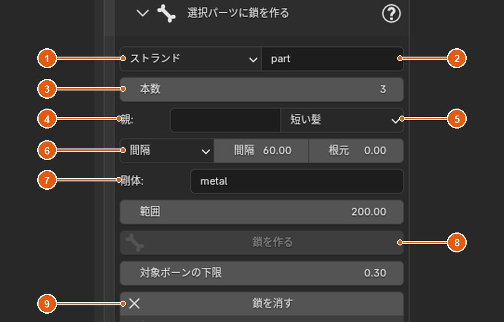
- 1形の欄：「ストランド」（1 本の線）、「シート」（幅広）、「リンク」（離れた固い部品）から選ぶ
- 2名前の欄：鎖の名前（既定は part）。鎖ごとに別の名前にする
- 3本数：鎖の骨の数。「シート」の時は、分ける列の数と分け方も出る
- 4親：鎖をぶら下げる骨。空ならパーツの上端から選ぶ
- 5揺れの欄：「長い髪」「前髪」「短い髪」「耳飾り」「ジップの引き手」「裾」「垂れる帯」「なし」から揺れ方を選ぶ。選んだ揺れ方は鎖に覚える
- 6関節の欄：関節の置き方を「間隔」「分割ごと」「辺ループごと」「均一」から選ぶ。図は「間隔」の時で、「間隔」「根元」「範囲」の欄が出ている
- 7剛体：名前か材質にこの文字を含む部品は、1 本の骨で丸ごと運ぶ。関節の置き方が「間隔」「分割ごと」の時だけ出る
- 8鎖を作る：鎖を作る。リグに結び付いていないメッシュは自動で結び付き、ウェイトの無い頂点は ④「親」の骨に付く
- 9鎖を消す：その名前の骨と頂点グループを消す

- 10tail の鎖：しっぽの中に 6 本の骨が根元から先まで並んだ。形「ストランド」、名前 tail、「本数」6、「親」head、揺れ「短い髪」、関節「均一」で作った
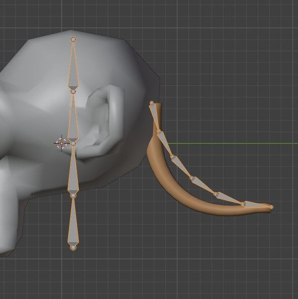
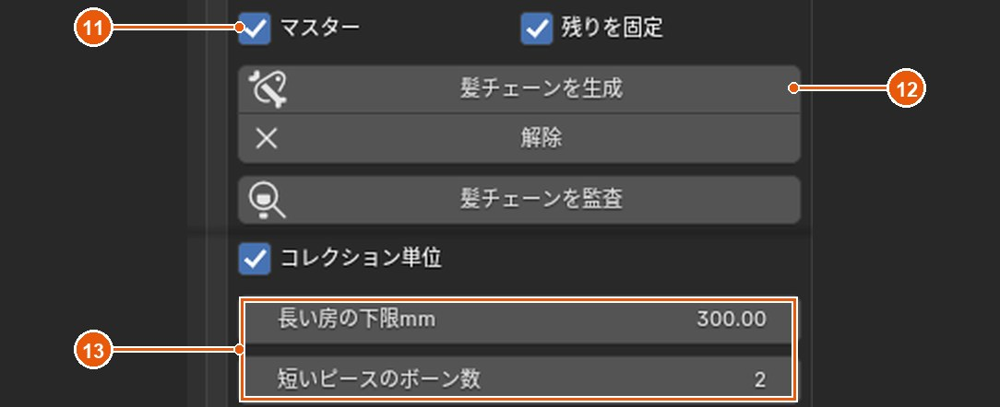
- 11マスター：オンにすると、1 本のマスターが全ての房を動かす
- 12髪チェーンを生成：名前で見分けた房を全部まとめて鎖にする。長い房は全て同じ本数の骨を持つ。下の「解除」は作った骨と頂点グループを消し、「髪チェーンを監査」は本数や長さを報告する
- 13コレクション単位・長い房の下限mm・短いピースのボーン数：コレクションごとに房をまとめ、下限より短いまとまりは短いピースとして少ない本数にする（0 なら固定）

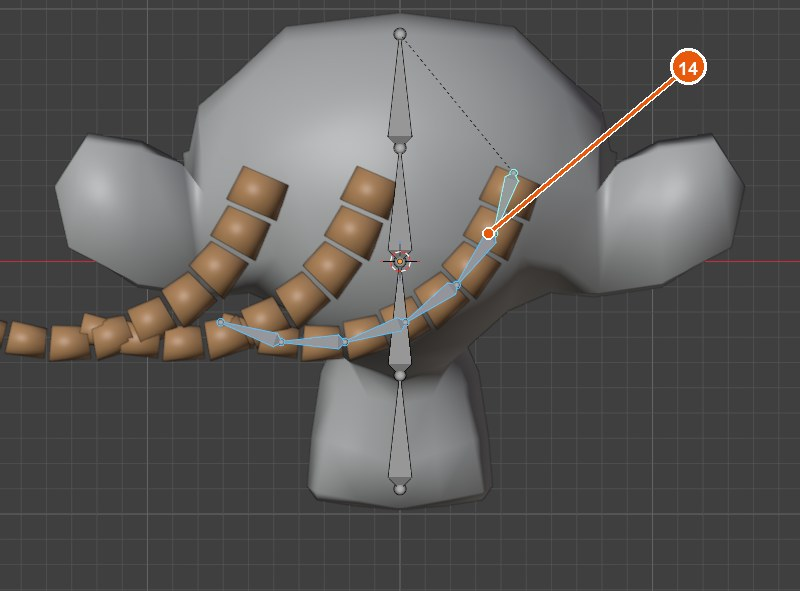
- 14マスター：水色の骨。これを回すと、全ての房が一緒に曲がる
- 「1. 準備とパーツ」＞「ワークフロー対象」の「対象リグアーマチュア」にリグを入れる。
- パーツのメッシュを選ぶ（編集モードで頂点を選べば、その部分だけ）。
- ① 形と ② 名前、③「本数」④「親」、⑤ 揺れ方を決める。
- ⑥ 関節の置き方を選び、⑧「鎖を作る」を押す。
- 鎖の骨を回して、パーツが一緒に曲がるかを確かめる。
- 髪の房がいくつもある時は、「髪・垂れ下がるパーツ」で「名前パターン」「ボーン数」「親ボーン」を決めて ⑫「髪チェーンを生成」を押す。
- ウェイトの無い頂点が付く骨は、「親」が変形しない制御骨なら一番近い変形骨、空ならパーツの上端に近い骨になる。どの骨かは報告に出る。
- 同じ名前で作り直す前に ⑨「鎖を消す」を押す。1 つの名前に 2 本作ると、最初の方が何にも結ばれなくなる。
- 「名前パターン」の既定 (tail[A-Z]) は tailA や tailS のような名前に合う。別の名前の房なら書き換える。
くわしい設定：5-29. 選択パーツに鎖を作る、5-27. 髪・垂れ下がるパーツ
2-2. 揺れを焼いて、ふつうのキーフレームにする図で見る
「揺れを焼く」は、鎖の揺れを計算して、ふつうのキーフレームとして骨に書き込みます。ファイルに残るのは骨のアニメーションなので、このアドオンが無くても再生でき、書き出しや手直しもできます。体のアニメーションを付けた後でボタンを押すだけで、しっぽなどの部品が動きの勢いで遅れて揺れ、「床で止める」をオンにすれば床を突き抜けません。
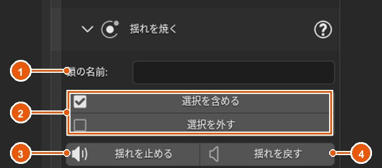
- 1鎖の名前：コンマ区切りの名前で鎖を指定する（*tail* のような書き方もできる）。空なら選択中の骨を使う
- 2選択を含める／選択を外す：選んだ鎖を、焼きに入れるか外すかを決める
- 3揺れを止める：焼いた揺れを、消さずにオフにする
- 4揺れを戻す：止めた揺れを、またオンにする
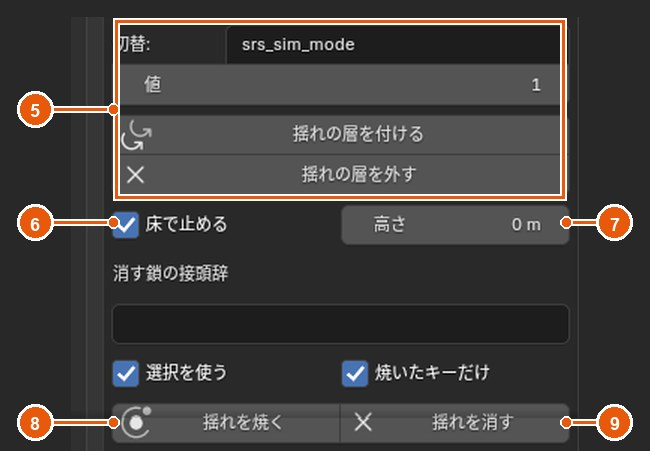
- 5切替・値＋揺れの層を付ける／外す：焼いた揺れを、手のキーの上に足す層にする。切替のプロパティがその値の時だけ再生する
- 6床で止める：全ての鎖を床より上に保つ。床に着いた鎖は床に沿って横たわる
- 7高さ：床の高さ
- 8揺れを焼く：シーンのフレーム範囲を焼く。揺れ方は、鎖を作った時の「揺れ」の設定に従う
- 9揺れを消す：焼いたキーを消す。鎖は元の形に戻り、体に付いて固く動く（手でキーを付けた骨はそのキーのまま）

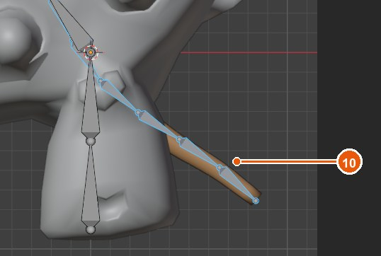
- 10しっぽ：首の動きの勢いで外へ振られ、少し曲がっている。首の骨とは別に動く
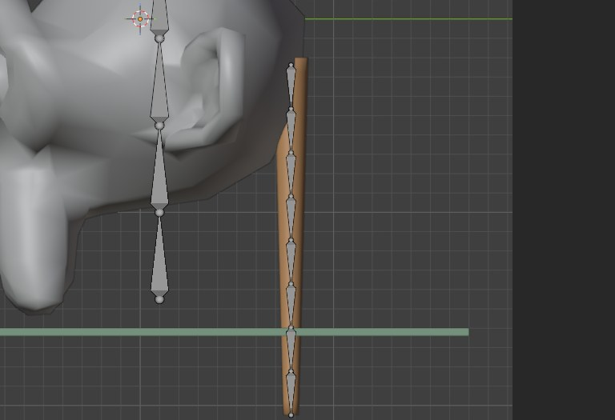
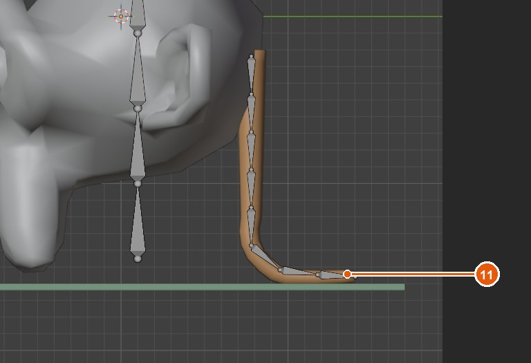
- 11しっぽの先：床の上で止まり、床に沿って寝ている
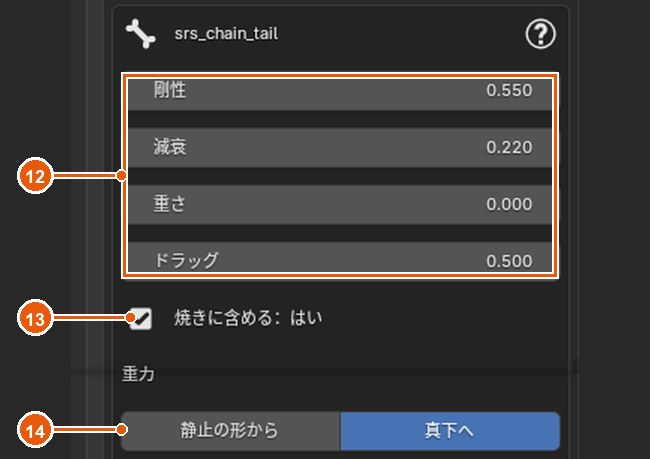
- 12剛性・減衰・重さ・ドラッグ：この鎖に覚えた揺れの値。変えたら、もう一度焼く
- 13状態の行：焼きに含めるか、揺れを止めているか、判定や揺れの層があるかを表示する（図は「焼きに含める：はい」）
- 14重力：「静止の形から」は止まっている時の巻きを保ち、「真下へ」は真下へ垂らす
- 体のアニメーションを入れ、カプセルを合わせておく。
- 必要なら ②「選択を含める」「選択を外す」で鎖を選ぶ（① に鎖の名前を入れてもよい）。
- ⑥「床で止める」と ⑦「高さ」を決める。
- ⑧「揺れを焼く」を押す。
- 再生し、③「揺れを止める」④「揺れを戻す」で比べる。
- ポーズモードで鎖の骨を選べばその鎖だけ、未選択なら焼きに含まれる全ての鎖を焼く。
- ⑫ の枠で値を変えた時は、次に焼いた時に効く。
- 「床で止める」は、焼きの最初のフレームで既に「高さ」より大きく（鎖の長さの 1 割を超えて）下にある鎖には効かず、そのことが報告に出る。
- 長いアニメーションは時間が掛かる。焼いている間は Blender を触らない。
くわしい設定：5-38. 揺れを焼く、5-39. 選んだ鎖（見出しは鎖の名前）
2-3. 部品ごとに、焼いた揺れと手付けを切り替える図で見る
名前の付いた部品ごとに、焼いた揺れを使うか、手で付けたキーだけで動かすかを、ボタン 1 つで切り替えます。部品を登録すると行ができ、選んだ状態はファイルに保存されます。手で付けたキーは上書きされないので、揺れを残したい部品と手で動かしたい部品を、同じ場面で使い分けられます。
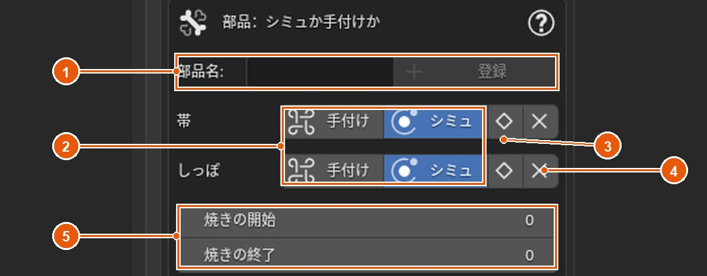
- 1部品名＋登録：「鎖の名前」に入れた鎖（空なら選んでいる骨の鎖）を、この名前の部品にする。鎖に揺れの層が付き、部品の行ができる。「部品名」が空の間は押せない（図では灰色）
- 2手付け／シミュ：部品の動きの元を選ぶ
- 3キーのボタン：その部品を鎖の設定で焼き、シミュに切り替える
- 4×：部品をリグから外す。行・切替・揺れの層・焼いた揺れが消える。手で付けたキーは残る
- 5焼きの開始／焼きの終了：焼くフレームの範囲。0 ならシーンの範囲。部品の行がある時に出る
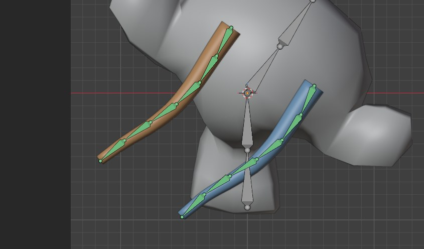
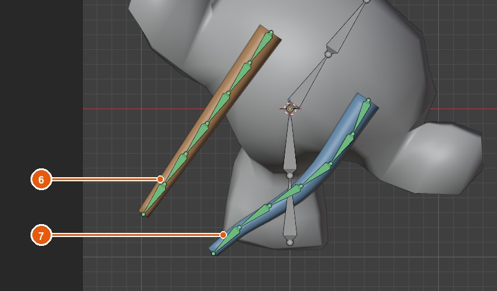
- 6tail：手付けにした。揺れが消えて固く傾く
- 7strap：シミュのまま。揺れたまま
- 「揺れを焼く」の「鎖の名前」に部品の鎖を入れる（例：*tail*）か、ポーズモードで各鎖の骨を選ぶ。
- ① に部品名を入れて「登録」を押す。部品ごとに繰り返す。
- 行の ③ キーのボタンで焼く。先に「揺れを焼く」で焼いてあれば、その揺れがそのまま層へ移るので、体の動きを変えていなければ焼き直さなくてよい。
- ② の「シミュ」か「手付け」を押し、再生して動きを確かめる。
- 同じ名前で「登録」を押すと置き換わり、入れなかった鎖の層と焼いた揺れは消える。
- 別の部品の鎖を入れると、その鎖はこちらへ移る（鎖が無くなった部品の行は消える）。
- 「アクションのスロットが不明：切り替えできません」と出たら、先にリグのアクションを割り当てる。
くわしい設定：5-40. 部品：シミュか手付けか
3. 準備
アドオンの入れ方・画面を日本語にする方法・N パネルと「？」ヘルプの共通の使い方は、「SmartTools 全体仕様書」にまとめています。先にそちらの 2〜5 章を読んでください。
| 入れる ZIP | SmartRigSuite_1.0.0.zip |
|---|---|
| Blender の画面での名前 | Smart Rig |
| 動く Blender | 5.1.2 |
4. 画面の場所
3D ビューポートのサイドバー（N キー）の「Smart Rig」タブにある、見出しが「スマートリグ」のパネルです。同じパネルは画像エディター・ノードエディター・ドープシートなど他のエディターのサイドバーにも出ます。
| 出る画面 | 3D ビューポート、画像エディター（UV エディター）、ノードエディター、ビデオシーケンサー、動画クリップエディター、ドープシート、グラフエディター、NLA エディター、テキストエディター、ファイルブラウザー、スプレッドシート |
|---|---|
| タブ | Smart Rig |
| モード | オブジェクトモード（作業によってポーズモード・編集モードを使います） |
- 3D ビューポートでサイドバーを開きます（開き方は全体仕様書を見てください）。
- サイドバーの縦のタブから「Smart Rig」を選びます。
- 見出しの左の三角を押して、使いたいセクションを開きます。
- 見出しの右端の「？」の使い方は、全体仕様書の「？」ヘルプの章を見てください。
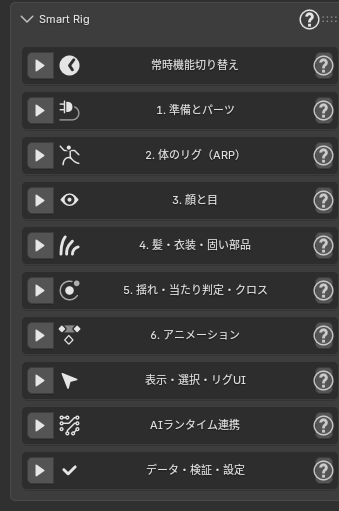
5. 機能の説明
画面の上から順に、見出しごとに説明します。見出しの右の「？」を押すと、同じ内容の説明が画面にも出ます。青い枠の「実例」は、スザンヌなどの簡単なモデルで実際に操作し、3D ビューでの変化を前と後で並べたものです。
5-1. スマートリグ（パネル全体）
SmartRig Suite の全ての道具をまとめたパネルです。一番上に「常時機能切り替え」があり、その下の番号の付いた 6 つの見出しが、リグを組む作業の順番です。番号の無い見出しは、必要な時に使う道具です。
場所サイドバー「Smart Rig」タブ
| 表示 | 働き |
|---|---|
| パネル見出しの「？」 | SmartRig Suite 全体の説明（何をするか、手順の順番、注意）を開きます。 |
| 「常時機能切り替え」 | パネルの設定を自動で保存するかなどを決めます。 |
| 「1. 準備とパーツ」〜「6. アニメーション」 | リグ作りの手順 1〜6 です。上から順に進めます。 |
| 「表示・選択・リグUI」「AIランタイム連携」「データ・検証・設定」 | 必要な時だけ使う道具です。 |
- 見出しの左の三角でセクションを開きます。
- 「？」ヘルプとツールチップの使い方は、全体仕様書の該当の章を見てください。
5-2. 常時機能切り替え
パネルの設定を自動で保存するかと、Proxy Picker のエラーを防ぐ保護を切り替えます。
場所「Smart Rig」タブ ＞「常時機能切り替え」
| 表示 | 働き |
|---|---|
| 「Nパネル状態保存」 | パネルとアドオン設定の値をすぐ保存し、再起動・ファイルを開いた時・シーンを切り替えた時に戻します。普段はオンにします。 |
| 「Proxy Pickerの制限コンテキストを保護」 | 別に導入した Proxy Picker が「シーンが無い」エラーを出す時だけオンにします。外部のファイルは変えません。普段はオフです。 |
- 見出しを開きます。
- 「Nパネル状態保存」がオンかを確かめます。
- Proxy Picker のエラーが出る時だけ、保護をオンにします。
5-3. 1. 準備とパーツ
外部ツールが使えるかを確かめ、作業の対象とパーツ（衣装）を決める、リグ作りの手順 1 です。
場所「Smart Rig」タブ ＞「1. 準備とパーツ」
| 表示 | 働き |
|---|---|
| 状態の行（Auto-Rig Pro／リグツール／Proxy Picker／AI_win） | 使える物にはチェックの印、使えない物には三角の印が付きます。右に版、または「未有効」「未設定」「利用不可」などを表示します。 |
| 「外部連携の競合を検出しました」 | 同じツールが二重に読み込まれている印です。下の行の指示に従い、Blender を再起動します。 |
| 「外部ツール状態を再検出」 | 外部ツールを導入・有効化した後に、もう一度調べ直します。 |
- Auto-Rig Pro を導入して有効にします。Proxy Picker と AI_win は任意です。
- 状態の行にチェックが付くかを見ます。
- 下の「ワークフロー対象」と「パーツ・衣装」を設定します。
5-4. ワークフロー対象
どのアーマチュア（骨のオブジェクト）がリグで、どのメッシュが素体かを SmartRig Suite に教えます。以後のボタンはここで決めた物に働きます。
場所「1. 準備とパーツ」＞「ワークフロー対象」
| 表示 | 働き |
|---|---|
| 「対象リグアーマチュア」 | 作業に使うリグです。空なら自動で探します。 |
| 「対象ボディメッシュ」 | 素体のメッシュです。空ならアクティブか選択中のメッシュを使います。 |
| 「現在の選択を使用」 | ビューポートで選んだアーマチュアとメッシュを、2 つの欄に入れます。 |
| 「事前検証を実行」 | 外部ツールの登録、AI ランタイム、対象、必須マーカー、二重登録などを調べて報告します。 |
- ビューポートでリグのアーマチュアと素体メッシュを選びます。
- 「現在の選択を使用」を押します。
- 「事前検証を実行」を押し、報告を読みます。
5-5. パーツ・衣装
キャラクターをコレクション単位のパーツに分け、衣装ごとに骨と一緒に表示・非表示・削除します。シェイプキーをパーツの表示に連動させることもできます。
場所「1. 準備とパーツ」＞「パーツ・衣装」
| 表示 | 働き |
|---|---|
| 「識別名」 | キャラクターのコレクション名に共通して入っている文字です。この文字の無いコレクション（カメラ・照明など）は触りません。初期値は特定のキャラクター用なので、自分のキャラクターに合わせて書き換えます。 |
| 「パーツ」 | 1 つのまとまりとして扱うコレクションを選びます。 |
| 「表示」／「非表示」 | パーツのメッシュと骨を一緒に切り替えます。 |
| 「連動」「キー」「パーツに連動」 | 「連動」にメッシュを入れ、そのメッシュがシェイプキーを持つ時に出る「キー」の欄でシェイプキーを選び、「パーツに連動」を押します。そのシェイプキーは、パーツの表示中は 1、非表示中は 0 になります。連動中のキーは欄の上に「メッシュ : キー（表示値 / 非表示値）」と並びます。鎖が切れたアイコンのボタンで連動を外します。 |
| 「メッシュも」＋「パーツを削除」 | パーツのメッシュと、そのために作った骨と頂点グループを消します。「メッシュも」がオフならリグだけを外し、形は残します。 |
| 「パーツを監査」 | パーツの一覧と、どのパーツにも属さない骨を報告します。 |
- 「識別名」に共通の文字を入れます。
- 「パーツを監査」で、どれがパーツかを確かめます。
- 「パーツ」でコレクションを選び、「表示」「非表示」で切り替えます。
5-6. 2. 体のリグ（ARP）
Auto-Rig Pro で体のリグを組んで仕上げる手順 2 です。参照リグ・マーカー・バインドの後、肘・膝・手首の処理、ウェイトの編集、リグの検査を行います。
場所「Smart Rig」タブ ＞「2. 体のリグ（ARP）」
| 表示 | 働き |
|---|---|
| サブ見出し | 「参照リグとマーカー」「バインド」「靴底の持ち上げ」「キャラクターのサイズ変更」「補助ボーンの一括設定」「膝の分離」「膝の角度プロファイル」「手首の潰れ」「ウェイトツール」「リグの衛生」が並びます。 |
| 警告の行「このセクションを使うには外部Auto-Rig Proアドオンを有効化してください。」 | Auto-Rig Pro が無効の時に、三角の注意の印と一緒にセクションの下に出ます。この時は Auto-Rig Pro を呼ぶボタン（参照リグやバインドなど）が灰色になります。 |
- 「参照リグとマーカー」でリグの骨組みを作ります。
- 「バインド」でメッシュをリグに結び付けます。
- 「補助ボーンの一括設定」で肘と膝を整えます。
- 「リグの衛生」と「ウェイトツール」で確かめます。
5-7. 参照リグとマーカー
Auto-Rig Pro のリグ作りを始めます。参照リグ（骨の配置の下書き）とリムの追加、マーカーの推定、検出、Match to Rig を、前提を確かめてから呼ぶので、途中でエラーで止まりません。
場所「2. 体のリグ（ARP）」＞「参照リグとマーカー」
| 表示 | 働き |
|---|---|
| プリセットの欄＋「参照リグを追加」 | 「人型」「自由形式」「犬」「馬」「鳥」「カスタムスケルトン」から参照リグを追加します。 |
| 「オブジェクト操作を準備」／「編集操作を準備」 | それらしいリグを選んで有効にし、そのモードに入ります。 |
| リムの欄＋「参照リムを追加」 | 腕・脚・頭などのリム（手足などの部位）をアーマチュアの編集モードで追加します。 |
| 「必須マーカー準備済み」／「不足マーカー: 」 | 必要なマーカーがそろっているか、足りないマーカーの一覧を表示します。 |
| 「ボディマーカーを推定」 | AI ランタイムとマーカーを確かめてから、Auto-Rig Pro 自身の推定を始めます。 |
| 「検出を実行」 | 必須マーカーを確かめてから、Auto-Rig Pro の検出を実行します。 |
| 「参照ボーンをリグへ適合」 | 合う参照アーマチュアが見つかった時だけ、Auto-Rig Pro の Match to Rig を実行して本番のリグを作ります。 |
- プリセットを選び、「参照リグを追加」を押します。
- 「ボディマーカーを推定」か、Auto-Rig Pro で手でマーカーを置きます。
- 「必須マーカー準備済み」と出たら「検出を実行」を押します。
- 参照ボーンを整えてから「参照ボーンをリグへ適合」を押します。
5-8. バインド
Auto-Rig Pro 自身のバインドで、メッシュをリグに結び付けます。バインドとは、メッシュが骨に合わせて動くようにすることです。
場所「2. 体のリグ（ARP）」＞「バインド」
| 表示 | 働き |
|---|---|
| 「バインド」 | 選んだメッシュに Auto-Rig Pro の Bind to Rig を行います。 |
| 「解除」 | 選んだメッシュのバインドを外します。 |
| 「スケール修正リバインド」 | スケールを変えたメッシュ用の、Auto-Rig Pro のリバインドです。 |
- オブジェクトモードでメッシュを選びます。
- 「バインド」を押します。
- ポーズモードで腕や脚を回し、メッシュがついて来るかを確かめます。
5-9. 靴底の持ち上げ
素足で床（Z＝0）に立つように作ったキャラクターを、靴底の高さだけ全体を持ち上げます。リグの親にドライバー（値を自動で計算する仕組み）を付けるので、骨は増えません。
場所「2. 体のリグ（ARP）」＞「靴底の持ち上げ」
| 表示 | 働き |
|---|---|
| 状態の行 | 「持ち上げ中」「解除中」「未設定」のどれかと、測った高さを表示します。Auto-Rig Pro のリグが決まっていない時は「Auto-Rig Pro のリグを選んでください。」とだけ出て、ボタンは出ません。 |
| 「余白 mm」 | 「測る」で足す高さです（既定 0）。 |
| 「高さ mm」 | 「上げる」で使う高さです。既定の -1 なら、測った靴底の高さを使います。 |
| 「投影元も上げる」 | リグの親の外にある UV 投影の投影元も、一緒に上げます（既定オン）。 |
| 「測る」 | 選んでいる靴（と足）のメッシュが床の下へどこまで出ているかを、静止の姿勢で測って覚えます。「余白 mm」の分を足して覚えます。何も動きません。 |
| 「上げる」 | 全体を上げます。「高さ mm」が 0 より小さい時（既定の -1）は測った靴底の分、0 以上の時はその値の分だけ上げます。 |
| 「解除」 | 素足の位置へ戻します。ドライバーと測った値は残ります。 |
| 「取り外す」 | ドライバーと設定を外し、全てを元の位置へ戻します。 |
| 下の一覧 | リグの外のオブジェクトを「一緒に上げる」「不要」「未判定」で表示します。 |
- 「ワークフロー対象」の「対象リグアーマチュア」に Auto-Rig Pro のリグを入れます（リグをアクティブにしても構いません）。
- 靴（と足）のメッシュを選び、「測る」を押します。
- 「上げる」を押します。
- リグの作業をする前は「解除」し、作業の後でもう一度上げます。
5-10. キャラクターのサイズ変更
仕上がったリグ付きキャラクターの大きさを、リグを作り直さずに、世界の原点を中心に変えます。モディファイア・ウェイト・ドライバー・拘束はそのまま残ります。
場所「2. 体のリグ（ARP）」＞「キャラクターのサイズ変更」
| 表示 | 働き |
|---|---|
| 一番上の行 | 対象のリグが決まると「リグ：名前」と出ます。リグが無い時や対象にならない時は、行に理由が出て「確認」「サイズを変更」が押せません。 |
| 「倍率」／「目標の高さ」 | 倍率で指定するか、目標の高さで指定するかを選びます。 |
| 「高さの測り方」「今の高さ（mm）」「測る」「目標の高さ（mm）」 | 目標の高さで指定する時に使います。「高さの測り方」は「上端から下端まで」か「床からの頭頂」です。メッシュを選んで「測る」と今の高さが入り、倍率が表示されます。 |
| 「シーン全体」 | キャラクター以外も含め、シーンの全てのオブジェクトを変えます。 |
| 「照明とカメラも」 | 照明とカメラも一緒に動かします。明るさは変えません。 |
| 「マテリアルの長さ」 | バンプの距離など、マテリアルの中の長さも合わせます。 |
| 「パネルの長さ設定」 | このパネルの mm の設定と床の高さも合わせます。 |
| 「バインドを掛け直す」 | サーフェス変形などのバインド済みモディファイアを外して掛け直します。 |
| 「確認」 | 変わる物と、実行を止める物を報告します。何も変えません。 |
| 「サイズを変更」 | 大きさを変えます。 |
- Auto-Rig Pro のリグを選び、ファイルを保存します。
- 「倍率」か「目標の高さ」を選んで値を入れます。
- 「確認」を押して報告を読みます。
- 「サイズを変更」を押します。
実例リグ付きのキャラクターを半分の大きさにする（スザンヌ＋骨（Auto-Rig Pro と同じ名前の c_traj・c_pos を足したリグ）。右の立方体は比べるための目印で試した様子）
リグとメッシュをまとめて、世界の原点を中心に縮めます。リグを作り直す必要はありません。
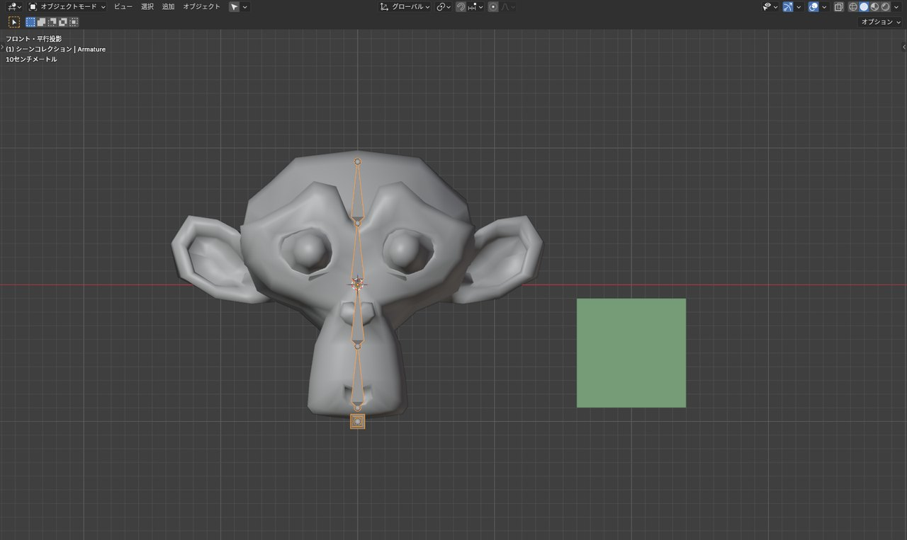
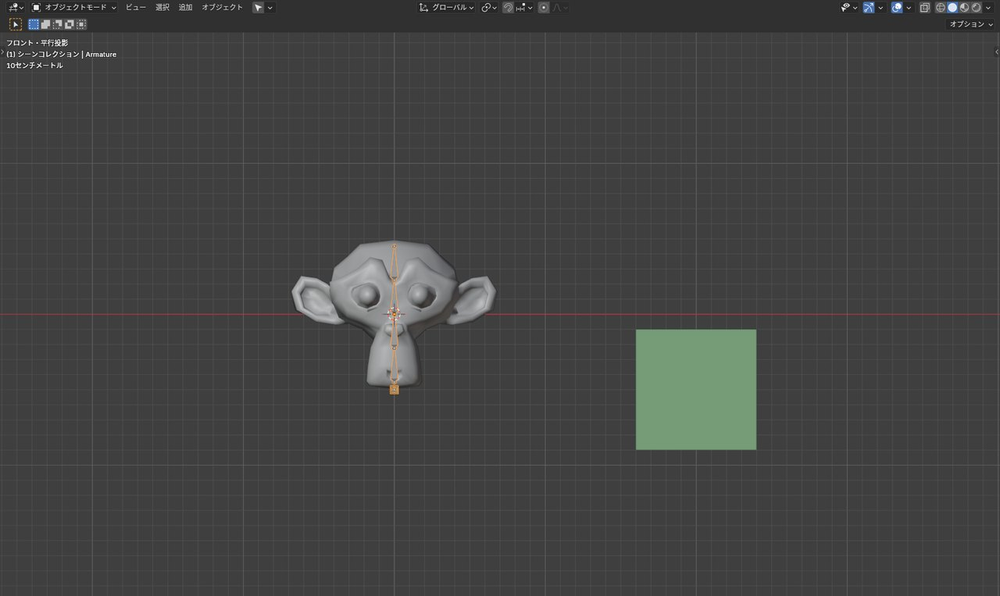
- Auto-Rig Pro のリグ（c_pos と c_traj の骨を持つアーマチュア）を選びます。
- 「2. 体のリグ（ARP）」＞「キャラクターのサイズ変更」で「倍率」を選び、倍率に 0.5 を入れます。
- 「確認」で変わる物を見てから、「サイズを変更」を押します。
見どころ：スザンヌと骨が一緒に半分になり、世界の原点（ここでは顔の中心）に向かって縮みます。「シーン全体」がオフなので、目印の立方体は大きさが変わりません。
実例サイズ変更の対象になるリグと、ならないリグ（スザンヌ＋骨 4 本と、同じリグに c_pos・c_traj の骨を足した物で試した様子）
「キャラクターのサイズ変更」の対象は、c_pos と c_traj の骨を持つ Auto-Rig Pro のリグだけです。それ以外のアーマチュアでは、パネルの行に理由が出てボタンが押せません。
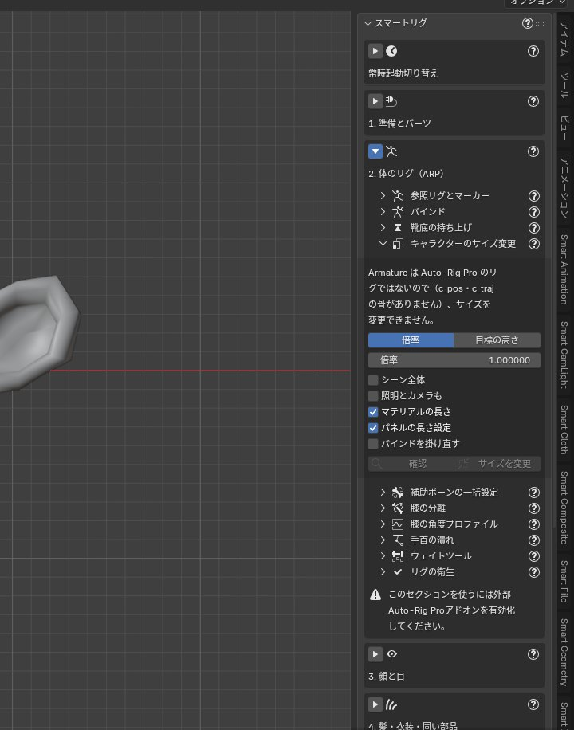
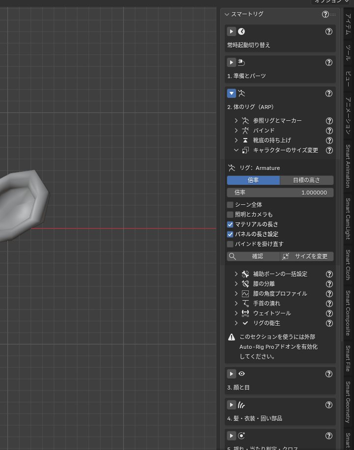
- アーマチュアを選びます。
- 「2. 体のリグ（ARP）」＞「キャラクターのサイズ変更」を開きます。
- 一番上の行と、「確認」「サイズを変更」のボタンを見ます。
見どころ：サイドバーの一番上の行を見比べます。普通のアーマチュアでは理由の行が出て「確認」「サイズを変更」が灰色です。Auto-Rig Pro のリグでは「リグ：名前」と出て、ボタンが押せます。
5-11. 補助ボーンの一括設定
Auto-Rig Pro が足した肘と膝の補助ボーン（曲げを助ける骨）を全て見つけ、関節ごとに一度に設定します。
場所「2. 体のリグ（ARP）」＞「補助ボーンの一括設定」
| 表示 | 働き |
|---|---|
| 「膝」／「肘」 | 設定する関節を選びます。 |
| 「関節に合わせる」 | 膝で決めた量を各関節の長さに合わせて縮めます。 |
| 「ウェイトも均す」 | 関節の周りのウェイトも平均化します。メッシュを書き換えます。 |
| 「一括設定」／「解除」 | 設定するか、ドライバーを外して元に戻します。 |
| 「補助ボーンを監査」 | 関節ごとの骨と、設定済みか、左右が鏡像でない組を報告します。 |
| 「扇の設定を左右で揃える」 | 右の扇（関節を囲む補助の骨）を左の鏡像にします。 |
- 「膝」「肘」を選びます。
- 「一括設定」を押します。
- 「補助ボーンを監査」を押し、左右が違えば「扇の設定を左右で揃える」を押します。
5-12. 膝の分離
膝を深く曲げた時に、太もも側とふくらはぎ側が分かれて動くようにして、潰れを防ぎます。始動角より浅い曲げでは何も変えません。
場所「2. 体のリグ（ARP）」＞「膝の分離」
| 表示 | 働き |
|---|---|
| 「始動角」／「終端角」 | 分離が始まる角度と、最大になる角度です（既定 90 度と 170 度）。 |
| 「太もも スライド」「太もも 離す」 | 太ももの膝側の端を滑らせる量と、膝の皿を前へ出す量です。 |
| 「ふくらはぎ スライド」「ふくらはぎ 離す」 | ふくらはぎ側を滑らせる量と、太ももから離す量です。「ふくらはぎ 離す」が潰れを止める主な値です。 |
| 「膝の分離を設定」／「解除」 | 設定するか、ドライバーを外して元に戻します。 |
| 「膝の分離を監査」 | 動かしているコントローラーと、邪魔している物を報告します。 |
| 「ランプ曲線」 | 任意です。「角度:割合」の組で効き方の曲線を書きます。空なら直線です。 |
- 角度と 4 つの量を決めます。
- 「膝の分離を設定」を押し、続けて「膝の分離を監査」を押します。
- 膝を深く曲げて判断し、必要なら値を変えてもう一度設定します。
5-13. 膝まわりのウェイトを均す
膝の周りの球の中でウェイトを平均化し、少し曲げた膝の裏のしわを消します。
場所「膝の分離」の中の「膝まわりのウェイトを均す」
| 表示 | 働き |
|---|---|
| 「半径」 | ウェイトを平均化する球の大きさです（既定 115mm）。 |
| 「強さ」 | 1 回ごとに周りへ寄せる強さです（既定 0.6）。 |
| 「回数」 | 繰り返す回数です（既定 8）。 |
| 「膝のウェイトを均す」 | 膝に実行します。 |
- 「半径」「強さ」「回数」を決めます。
- 「膝のウェイトを均す」を押します。
- 膝を約 90 度に曲げ、裏に鋭い折れ線が出ないかを見ます。
5-14. 膝の角度プロファイル
曲げる角度ごとに膝の形を決めます。膝の皿と膝の裏のくぼみを、角度ごとに別々に調整できます。
場所「2. 体のリグ（ARP）」＞「膝の角度プロファイル」
| 表示 | 働き |
|---|---|
| 「前面」 | 前の扇の「角度:mm」の組です。正で膝の皿を外へ押し出し、負で引っ込めます。 |
| 「後面」 | 後ろの扇の「角度:mm」の組です。正で膝の裏のくぼみを埋めます。 |
| 「プロファイルを設定」／「解除」 | 設定するか、ふつうの直線の動きに戻します。 |
| 「プロファイルを監査」 | どの扇を動かしているかと、いくつかの角度での値を報告します。 |
- 「前面」「後面」を書き換えます（既定のままでも構いません）。
- 「プロファイルを設定」を押します。
- 「プロファイルを監査」を押し、膝を曲げて判断します。
5-15. 手首の潰れ
手首を深く曲げた時にしわが重なって面が潰れるのを防ぎます。うまく動いている角度までは何も変えません。
場所「2. 体のリグ（ARP）」＞「手首の潰れ」
| 表示 | 働き |
|---|---|
| 「襞を開く」 | 両手首にドライバーを付けます。 |
| 「確認」 | 手首の周りの肌を、曲げ・傾き・ねじりで測り、他の動きを壊していないかを確かめます。 |
| 「外す」 | ドライバーを外し、元の手首に戻します。 |
- 「襞を開く」を押します。
- 「確認」を押します。
- 手首を深く曲げ、内側のしわが潰れないかを見ます。
5-16. ウェイトツール
頂点のウェイト（その頂点を各骨がどれだけ動かすか）を数値で正確に編集します。コピーと貼り付け、全ウェイトの表、品質の監査もできます。
場所「2. 体のリグ（ARP）」＞「ウェイトツール」
| 表示 | 働き |
|---|---|
| 「ウェイト」（初期値 0.5）＋「設定」「+」「-」 | アクティブな頂点グループに、その値を設定・加算・減算します。 |
| 0〜1 の数字のボタン | その値をそのまま設定します。 |
| 「スケール」の欄（初期値 1.0）＋「スケール」のボタン | ウェイトに倍率を掛けます。 |
| 「正規化」「クリーン」「影響数制限」 | 合計を 1 にする、小さい値を消す、影響する骨の数を絞る、の 3 つです。 |
| 「選択頂点のみ」 | オフならメッシュの全頂点に働きます。 |
| 「編集後に正規化」 | 編集した値を保ち、残りを他のロックされていないグループに分けます。 |
| 「クリーンしきい値」 | 「クリーン」で消す値の上限です（既定 0.0001）。 |
| 「コピー」／「貼り付け」 | 最初に選んだ頂点の全ウェイトを、選んだ頂点へ写します。 |
| 「スキンウェイトテーブル」／「テーブル書き出し」 | 頂点とグループの表を開きます。表は Text に書き出せます。 |
| 「ウェイト品質監査」 | ウェイト無しの頂点、合計が 1 でない頂点、影響数の超過などを調べます。 |
- バインド済みのメッシュを選び、編集モードで頂点を選びます。
- 編集する頂点グループをアクティブにします。
- 「ウェイト」を決めて「設定」などを押します。
- 最後に「ウェイト品質監査」を押します。
実例選んだ頂点のウェイトを数値で 1 にする（スザンヌ＋骨 4 本で試した様子）
選んだ頂点だけ、アクティブな頂点グループのウェイトを、ボタン 1 つで正確な値にします。
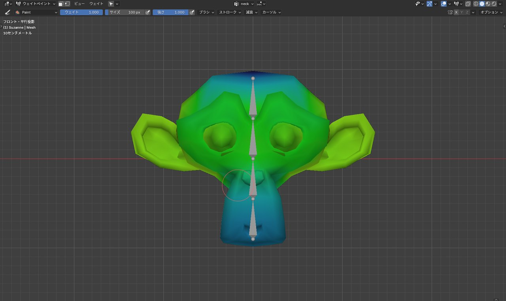
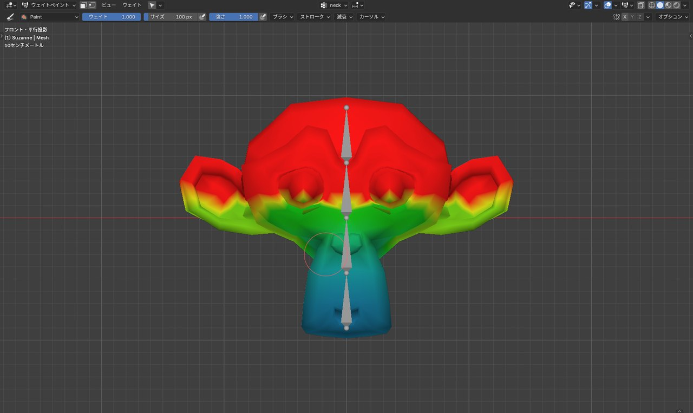
- スザンヌを選び、オブジェクトデータのプロパティで頂点グループ「neck」をアクティブにします。
- 編集モードで、頭の上半分の頂点を選びます。
- 「2. 体のリグ（ARP）」＞「ウェイトツール」で「選択頂点のみ」をオンにし、数字のボタン「1」を押します。
- ウェイトペイントモードにして結果を見ます。
見どころ：ウェイトペイントの色は、青が 0、赤が 1 です。「後」では、選んだ頭の上の部分だけが真っ赤（ウェイト 1）になり、選んでいない下の部分は元の色のままです。
5-17. リグの衛生
ウェイトの検査では見えないリグの問題を探して直します。何も動かさないチャンネル、肌を突き抜ける顎や歯、結ばれていない形、評価されないドライバー、中心線のウェイトなどです。
場所「2. 体のリグ（ARP）」＞「リグの衛生」
| 表示 | 働き |
|---|---|
| 「リグの衛生を監査」 | 下の全ての種類の問題を報告します。 |
| 「死んだチャンネルを閉じる」 | 何も動かさないチャンネルをロックします。 |
| 「顎と歯に天井を付ける」 | 顎・歯・舌が肌に当たらない範囲に動きを制限します。 |
| 「未接続を接続する」 | 結ばれているように見えるだけの形を結び直し、親の無い小物を頭か首の骨に付けます。 |
| 「死んだドライバーを直す」 | ドライバーが読む、無いプロパティを 0 で足します。今の動きは変わりません。 |
| 「微小な重みを消す」 | 肌を裂く、0.05 未満の孤立した重みを消します。 |
| 「左右対称に」 | 左右で対になる頂点の重みを鏡像にします。 |
| 「中心の帯 mm」＋「中心で脚の重みを分ける」 | 中心線付近の左右の脚の重みを、位置で分けます（スカート用）。 |
- 「リグの衛生を監査」を押して報告を読みます。
- 報告に出た問題のボタンだけを押します。
- もう一度監査して、直した種類が 0 になるかを確かめます。
5-18. 3. 顔と目
Auto-Rig Pro のリグの顔を仕上げる手順 3 です。目のリグ、眼球の結合、瞼、顔のウェイト、補正シェイプキー、瞼の落ち影を整えます。
場所「Smart Rig」タブ ＞「3. 顔と目」
| 表示 | 働き |
|---|---|
| サブ見出し | 「目のリグ」「眼球の結合」「瞼のピボット」「顔のウェイト」「顔の効き範囲」「補正シェイプキー」「瞼の落ち影」が並びます。 |
- 「目のリグ」で目の参照を置き、「2. 体のリグ（ARP）」の「参照ボーンをリグへ適合」を実行します。
- 「眼球の結合」で眼球を結び、検証します。
- 「瞼のピボット」で瞼を整えます。
- 必要に応じて効き範囲・補正キー・落ち影を設定します。
5-19. 目のリグ
目の参照ボーンを眼球のオブジェクトに合わせて置き、眼球の中心で回るようにします。作られた目のリグも監査します。
場所「3. 顔と目」＞「目のリグ」
| 表示 | 働き |
|---|---|
| 「左目」／「右目」 | 眼球のメッシュを選びます。空の側は飛ばします。 |
| ピボットの取り方の欄 | 回転の中心を「オブジェクト原点」にするか「バウンディングボックスの中心」にするかを選びます。 |
| 「スペック距離」 | 目の参照ボーンの長さを、眼球の半径の何倍にするかです（既定 1.0）。 |
| 「目の参照をスナップ」 | 参照ボーンを置きます。 |
| 「目のリグを監査」 | ピボットの精度や、目のターゲットが顔の後ろにないかなどを調べます。 |
- 「左目」「右目」を選びます。
- 「目の参照をスナップ」を押します。
- 「2. 体のリグ（ARP）」の「参照ボーンをリグへ適合」を実行し、「目のリグを監査」を押します。
5-20. 眼球の結合
眼球を 2 つに分けて結合します。瞳は視線のコントロールを追い、外側の縁は顔の眼窩と一緒に動くので、横を見ても縁が眼窩から出ません。
場所「3. 顔と目」＞「眼球の結合」
| 表示 | 働き |
|---|---|
| 「顔メッシュ」 | 縁を収める眼窩を持つ頭のメッシュです。 |
| 「眼球を結合」 | 瞳と縁を結合します。 |
| 「検証 mm」 | 検証で視線のコントロールを動かす距離です（既定 40）。 |
| 「眼球を検証」 | 視線を動かして、瞳が動き、顔との継ぎ目が離れないかを測ります。 |
| 「仮リグを削除」 | 仮の目のアーマチュアを消します。まだ使われている間は消しません。 |
- 「顔メッシュ」を選びます。
- 「眼球を結合」を押します。
- 「眼球を検証」を押して結果を読みます。
5-21. 瞼のピボット
瞼が眼球から離れて回り、閉じきらない問題を直します。回る骨を眼球の中心へ移し、閉じた位置を超えないようにし、Auto-Rig Pro の Blink Pose を準備します。
場所「3. 顔と目」＞「瞼のピボット」
| 表示 | 働き |
|---|---|
| 「検証の引き量mm」＋「監査」 | 上瞼を引いて、ピボットのずれと、目がどこまで閉じるかを測ります。100% 未満は閉じきりません。 |
| 「瞼のピボットを補正」 | 回る瞼の骨を眼球の中心へ移します。ウェイトは変えません。 |
| 「瞼の可動域をクランプ」 | 瞼のコントロールの動きを、目が閉じる所で止めます。 |
| 「Blink Pose の準備」／「下瞼」 | 瞼のコントロールを選んで閉じた状態にします。続けて Auto-Rig Pro の Add Blink Pose を画面で押します。 |
- 「監査」を押します。
- ずれていれば「瞼のピボットを補正」を押します。
- 「瞼の可動域をクランプ」を押します。
5-22. 顔のウェイト
顔のウェイトの状態を数字で報告します。頂点ごとの合計、影響数のばらつき、効きの届く距離、左右の差です。
場所「3. 顔と目」＞「顔のウェイト」
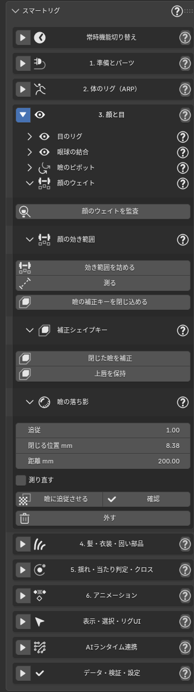
| 表示 | 働き |
|---|---|
| 「顔のウェイトを監査」 | 本体のリグの骨だけで集計して報告します。何も変えません。 |
- バインド済みの顔メッシュを選びます。
- 「顔のウェイトを監査」を押します。
- ステータスバーとレポートの Text で報告を読みます。
5-23. 顔の効き範囲
顔の骨をそれぞれ自分の部位に収めます。目を動かして眉が動いたり、顎が上唇の真ん中を引いたりしないようにします。
場所「3. 顔と目」＞「顔の効き範囲」
| 表示 | 働き |
|---|---|
| 「効き範囲を詰める」 | 目・瞼・眉・鼻・顎の骨を、それぞれ別の部位から外します。 |
| 「測る」 | 骨ごとの効きの届く距離と、別の部位に入っている量を報告します。 |
| 「瞼の補正キーを閉じ込める」 | 瞼を閉じる補正キーを、瞼の部位の外では 0 へ減らします。 |
- 「測る」を押します。
- 「効き範囲を詰める」を押します。
- もう一度「測る」を押して、別の部位への効きが減ったかを見ます。
5-24. 補正シェイプキー
ウェイトでは表せない形を、シェイプキー（形の差分）で補います。閉じた時に角張る瞼と、顎に引かれて下がる上唇が対象です。
場所「3. 顔と目」＞「補正シェイプキー」
| 表示 | 働き |
|---|---|
| 「閉じた瞼を補正」 | 閉じた瞼の角張りを取るシェイプキーを作り、瞼のコントロールで動かします。 |
| 「上唇を保持」 | 顎と一緒に上唇が下がらないようにするシェイプキーを作ります。 |
- 「閉じた瞼を補正」を押します。
- 「上唇を保持」を押します。
- 瞬きと口の開け閉めで確かめます。
5-25. 瞼の落ち影
眼球に描いた瞼の落ち影を、上瞼と一緒に動かします。UV 投影の投影機を作り、瞼の動きに合わせて動かします。影は頭や体の動きには追従し、視線では回りません。
場所「3. 顔と目」＞「瞼の落ち影」
| 表示 | 働き |
|---|---|
| 「追従」「閉じる位置 mm」「距離 mm」 | 瞼の移動のうち影が動く割合（既定 1.0）、測る時に瞼のコントロールを引く量（既定 8.38）、投影機を目の前のどこに置くか（既定 200）です。初めて作る時と、「測り直す」がオンの時だけ効きます。 |
| 「測り直す」 | オンにして「瞼に追従させる」を押すと、投影機を置き直して瞼の動きを測り直します。既定はオフで、既にある投影機の置き場所と動きをそのまま使います。 |
| 「瞼に追従させる」 | 投影機と UV 投影の設定を作り、上瞼で動かします。もう一度押しても壊れません。 |
| 「確認」 | 瞼を閉じると影が動くこと、頭を動かしても影がずれないことを確かめます。 |
| 「外す」 | 投影機を取り除き、UV 投影のモディファイアを元の状態に戻します。 |
- 「瞼に追従させる」を押します。
- 「確認」を押します。
- 瞬きと、頭を動かして見た目を確かめます。
5-26. 4. 髪・衣装・固い部品
髪や垂れる部品にボーンの鎖を作り、衣装を肌から結合し、帯や金具や重ね着を整える手順 4 です。
場所「Smart Rig」タブ ＞「4. 髪・衣装・固い部品」
| 表示 | 働き |
|---|---|
| サブ見出し | 「髪・垂れ下がるパーツ」「衣装パーツ」「選択パーツに鎖を作る」「短冊ボーン（ARP の Kilt）」「腕や脚に巻かれた帯」「固い部品・骨の族」「重ね着・めり込み」が並びます。 |
- 髪は「髪・垂れ下がるパーツ」か「選択パーツに鎖を作る」で鎖を作ります。
- 衣装は「衣装パーツを結合」の後、スカートや上着に短冊ボーンを付けます。
- 必要に応じて帯・固い部品・重ね着を整えます。
- その後、「5. 揺れ・当たり判定・クロス」で揺れを焼きます。
5-27. 髪・垂れ下がるパーツ
髪の房をまとめて鎖にします。長い房は全て同じ本数の骨を持つので、1 本のマスターで全部を一緒に動かせます。短いピースは少ない本数になります。
場所「4. 髪・衣装・固い部品」＞「髪・垂れ下がるパーツ」
| 表示 | 働き |
|---|---|
| 「名前パターン」 | 房を名前で見分ける正規表現です。「コレクション単位」がオンならコレクションの名前に当て（「パーツ・衣装」の「識別名」も名前に含むコレクションだけが対象です）、コレクションごとに房をまとめます。オフならメッシュの名前に当て、最初のカッコの部分が房のまとまりになります。合わない物は鎖になりません。既定の (tail[A-Z]) は tailA や tailS のような名前に合うので、別の名前なら書き換えます。 |
| 「ボーン数」 | 長い房 1 本あたりの骨の数です（既定 10）。 |
| 「親ボーン」 | 房をぶら下げる骨です（既定 c_head.x）。 |
| 「接頭辞」 | 新しい骨と頂点グループの名前の頭です（既定 hair）。 |
| 「硬い材質」 | カンマ区切りの材質名です。その材質の部分は丸ごと 1 本の骨に結びます。初期値は特定のキャラクター用なので、自分の金具の材質名に書き換えます。 |
| 「マスター」 | 1 本のマスターが全ての房を動かします。 |
| 「残りを固定」 | どの房にも合わないメッシュを親の骨に固く結びます。 |
| 「髪チェーンを生成」／「解除」／「髪チェーンを監査」 | 鎖を作る、作った骨と頂点グループを消す、本数や長さを報告する、の 3 つです。 |
| 「コレクション単位」「長い房の下限mm」「短いピースのボーン数」 | コレクションごとに房をまとめ、下限より短いまとまりは短いピースとして少ない本数にします。0 なら固定します。 |
- 「コレクション単位」をオンかオフにし、房の名前に合う「名前パターン」を入れます。
- 「ボーン数」「親ボーン」「接頭辞」を決めます。
- 「髪チェーンを生成」を押し、「髪チェーンを監査」で確かめます。
実例3 本の房に、同じ本数の骨をまとめて作る（スザンヌ＋骨 4 本と、節が縦に並んだ 3 本の髪の房（背中側から見た図）で試した様子）
「髪チェーンを生成」を押すと、名前で見分けた房を全部まとめて鎖にします。長い房は同じ本数の骨を持ちます。
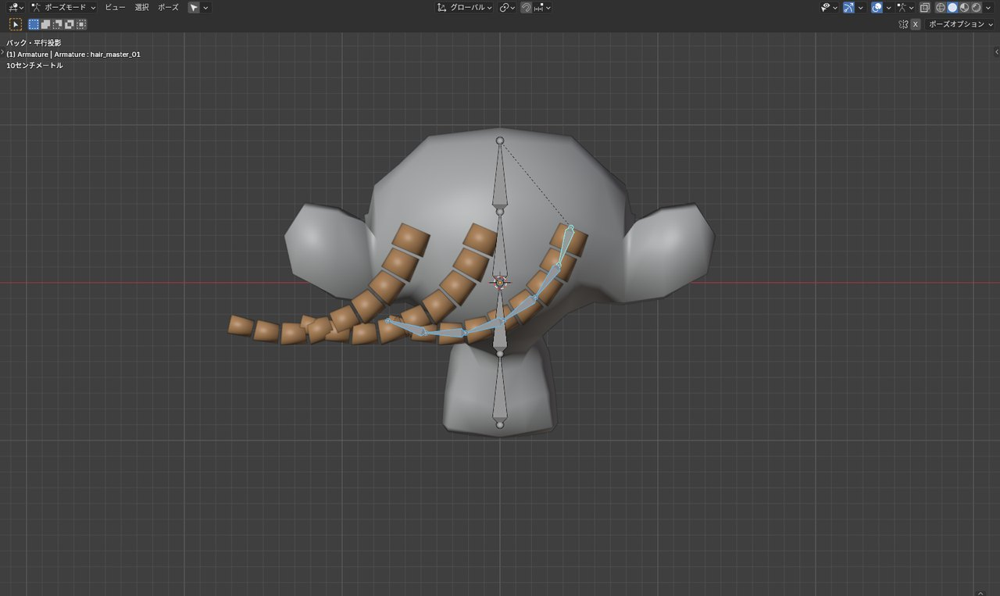
- 「4. 髪・衣装・固い部品」＞「髪・垂れ下がるパーツ」で「コレクション単位」をオフにします（名前で房を見分けます）。「名前パターン」は既定のままで、房の名前に tailA のような文字を入れておきます。
- 「ボーン数」を 6、「親ボーン」を head にします。
- 「髪チェーンを生成」を押します。
- ポーズモードで、マスターの骨（hair_master_01〜06）を全部選んで回します。マスターは最初の房の骨に重なっているので、アーマチュアのオブジェクトデータプロパティの「ボーンコレクション」で各房のコレクション（tailA など）を非表示にすると、マスターだけが見えて選びやすくなります。
見どころ：「後」では、3 本の房すべてに同じ本数の骨が根元から先まで並びます。3 枚目は房の骨を隠した様子で、水色の骨がマスターです。これを回すと全ての房が一緒に曲がります。
実例1 つにつながった筒の房にも、根元から先まで骨が並ぶ（スザンヌ＋骨 4 本と、1 つにつながった 3 本の筒（背中側から見た図）で試した様子）
節に分かれていない、1 つにつながった長い筒の房でも、「髪チェーンを生成」で長い房として同じ本数の骨が並びます。
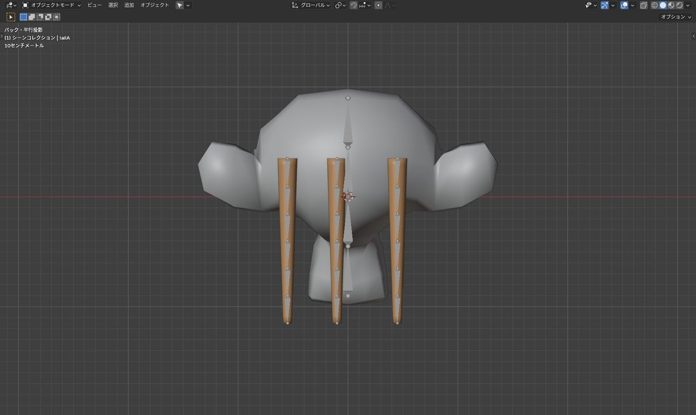
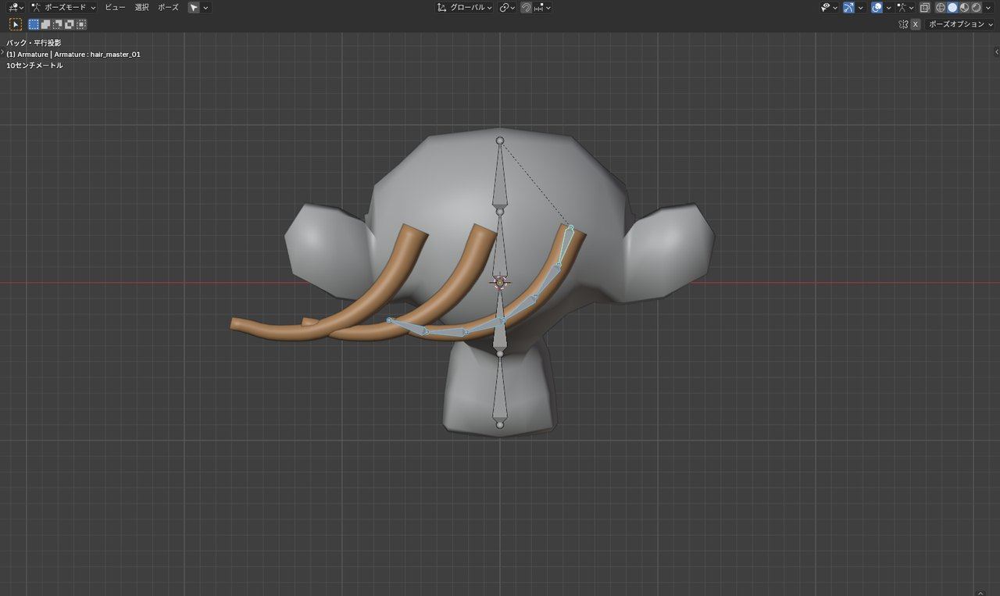
- 「4. 髪・衣装・固い部品」＞「髪・垂れ下がるパーツ」で「コレクション単位」をオフにします。
- 「ボーン数」を 6、「親ボーン」を head にします。
- 「髪チェーンを生成」を押します。
- ポーズモードでマスターの骨を回します。
見どころ：「後」では 3 本の筒の根元から先まで、同じ 6 本の骨が並びます。3 枚目はマスターの骨を回した様子で、3 本が同じに曲がります。
5-28. 衣装パーツ
選んだ衣装パーツに、肌のウェイトを写して結合します。調整済みの体と同じに動くので、全ての関節で衣装が肌と揃います。設定は押す前にパネルで決めます。
場所「4. 髪・衣装・固い部品」＞「衣装パーツ」
| 表示 | 働き |
|---|---|
| 「ウェイトの写し元」 | 写す元のメッシュです。空なら肌を自動で探します。ボディメッシュに指定した物と、このボタンで結合していないウェイトのあるメッシュには書きません。 |
| 「固い部品」 | 爪・鋲・ファスナーの歯などに使います。離れた塊ごとに 1 本の骨で動くので、形が崩れません。 |
| 「キー前の形から」 | 写し元のシェイプキーを効かせる前の形で写します。同じシェイプキーを持つ部品だけに使います。 |
| 「衣装パーツを結合」 | 肌のウェイトを選んだパーツに写します。どのメッシュから写したかは報告に出ます。 |
- オブジェクトモードで衣装のメッシュを選びます。
- 必要なら「ウェイトの写し元」「固い部品」「キー前の形から」を決めます。
- 「衣装パーツを結合」を押します。
- 肘と膝を曲げて、衣装が肌と一緒に動くかを確かめます。
実例帽子を頭のウェイトで結合する（スザンヌ＋骨 4 本と、頭にのせた帽子で試した様子）
帽子だけを選んで押すと、リグに結び付いた肌（スザンヌ）を自動で探し、そのウェイトを帽子に写して結合します。結合した帽子は、頭と同じに動きます。
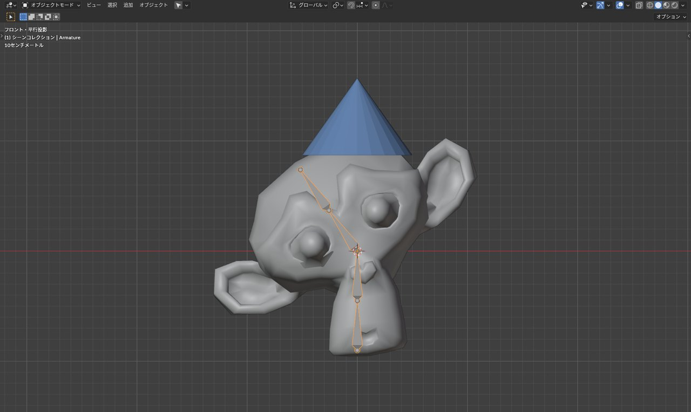
- 帽子を選びます。
- 「4. 髪・衣装・固い部品」＞「衣装パーツ」の「衣装パーツを結合」を押します（どのメッシュから写したかは報告に出ます）。
- ポーズモードで首の骨を回して、帽子がついてくるかを確かめます。
見どころ：首を傾けた同じ姿勢で比べています。結合する前は帽子が元の場所に残りますが、結合した後は頭と一緒に傾きます。
実例鋲を「固い部品」で結合すると、曲げても形が崩れない（肘のように曲がる筒に、鋲を 2 列のせた練習用の場面で試した様子）
「固い部品」をオンにして結合すると、離れた塊ごとに 1 本の骨で動くので、関節の上にある鋲も曲がりません。
- 画面の左の鋲（青）を選び、「4. 髪・衣装・固い部品」＞「衣装パーツ」の「ウェイトの写し元」に筒を入れて「衣装パーツを結合」を押します。
- 右の鋲（赤）を選び、「固い部品」をオンにして「衣装パーツを結合」を押します。
- ポーズモードで下の骨を回します。
見どころ：筒を曲げた同じ姿勢で比べます。「固い部品」がオフの青い鋲は肌と一緒にゆがみますが、オンの赤い鋲は四角い形のまま運ばれます。
5-29. 選択パーツに鎖を作る
選んだ 1 つのパーツ（ストラップ・三つ編み・裾など）に沿って骨の鎖を作り、ウェイトを付け、揺れの設定を鎖に覚えます。関節はメッシュの区切りに置き、固い部品の中には置きません。
場所「4. 髪・衣装・固い部品」＞「選択パーツに鎖を作る」
| 表示 | 働き |
|---|---|
| 形の欄 | 「ストランド」（1 本の線）、「シート」（幅広）、「リンク」（離れた固い部品）から選びます。 |
| 名前の欄 | 鎖の名前です（既定 part）。鎖ごとに別の名前にします。 |
| 「本数」（シートの時は「列」も） | 鎖の骨の数です。シートの時は、分ける列の数と、分け方（「ストレート」「周方向」）も出ます。 |
| 「親」 | 鎖をぶら下げる骨です。空ならパーツの上端から選びます。リグに無い骨の名前を入れると、「鎖を作る」は取り消されます。 |
| 揺れの欄 | 「長い髪」「前髪」「短い髪」「耳飾り」「ジップの引き手」「裾」「垂れる帯」「なし」から揺れ方を選びます。 |
| 関節の欄 | 関節の置き方を「間隔」「分割ごと」「辺ループごと」「均一」から選びます。「間隔」では「間隔」「根元」「範囲」、「辺ループごと」では「飛ばす」「馴染ませ」「長さ超」、輪の取り方（「毛束」「選択の上端から」）、「最短 mm」「根元を周りの面に沿わせる」が出ます。 |
| 「剛体」 | 名前か材質にこの文字を含む部品は、1 本の骨で丸ごと運びます。関節の置き方が「間隔」「分割ごと」の時だけ出ます。 |
| 「鎖を作る」 | 鎖を作ります。リグに結び付いていないメッシュは自動で結び付き、ウェイトの無い頂点は「親」の骨に付きます（親が変形しない制御骨なら一番近い変形骨、空ならパーツの上端に近い骨で、どの骨かは報告に出ます）。骨への親子付けは、動きが二重にならないよう外れます。 |
| 「鎖を消す」 | その名前の骨と頂点グループを消します。 |
| 「加算ボーンを追加」 | 体の動きの上に、手で直しを足すための子の骨を作ります。「対象ボーンの下限」（既定 0.30）より使われ方の少ない骨には付けません。 |
| グループ名の欄＋「選んだ鎖をまとめて動かす」／× | 選んだ複数の鎖に、まとめて振るコントロールを付けます。× で外します。 |
- パーツのメッシュを選びます（編集モードで頂点を選べばその部分だけ）。
- 形と名前、「本数」「親」、揺れの種類を決めます。
- 関節の置き方を選び、「鎖を作る」を押します。
- 鎖の骨を回して、パーツが一緒に曲がるかを確かめます。
実例しっぽに骨の鎖を作る（スザンヌ＋骨 4 本と、後ろに垂れたしっぽで試した様子）
頭の後ろに垂れたしっぽ（リグに結び付いていない 1 本の筒）を選んで「鎖を作る」を押すと、しっぽに沿って骨の鎖ができ、リグへの結び付けとウェイトも一緒に済みます。
- 「1. 準備とパーツ」＞「ワークフロー対象」の「対象リグアーマチュア」にリグを入れます。
- オブジェクトモードでしっぽのメッシュを選びます。
- 「4. 髪・衣装・固い部品」＞「選択パーツに鎖を作る」で、形を「ストランド」、名前を「tail」、「本数」を 6、「親」を head、揺れを「短い髪」にします。
- 関節の欄を「均一」にして、「鎖を作る」を押します。
見どころ：「後」では、しっぽの中に 6 本の骨が根元から先まで並びます。3 枚目は鎖の骨を少し曲げた様子で、しっぽのメッシュが骨と一緒に曲がるので、結び付けとウェイトが済んでいることが分かります。
5-30. 短冊ボーン（ARP の Kilt）
スカート・上着の裾・袖口に、Auto-Rig Pro の Kilt で短冊ボーン（縦に並ぶコントローラーの列）を付けます。短冊は脚や手を避けて動きます。リグの他の部分は変えません。
場所「4. 髪・衣装・固い部品」＞「短冊ボーン（ARP の Kilt）」
| 表示 | 働き |
|---|---|
| 「名前」と配置の欄 | 短冊の名前（既定 skirt）と、「左右対称」「1 周」「左だけ」「右だけ」の配置を決めます。 |
| 「列」／「段」 | 短冊の列の数（左右対称なら片側の数）と、1 列のコントローラーの数です。 |
| 「避ける」 | 短冊が避ける骨です（既定は左右の太もも）。 |
| 「ひだに沿わせる」 | 服のひだを読み、ひだ 1 枚に 1 列を置きます（「1 周」の時だけ）。 |
| 「Z でも避ける」 | 脚を大きく回す時に、上下方向でも避けます。 |
| 「角度」 | 短冊を置く角度です。空なら等間隔です。 |
| 「上端のつなぎ mm」 | 上から何 mm で、部品のウェイトから短冊へ移すかです（既定 40）。 |
| 「上端は下の服から」＋服の欄 | 上端のつなぎを、下の服のウェイトから取ります。 |
| 「短冊ボーンを作る」 | 短冊ボーンを作ってウェイトを結びます。 |
- 編集モードで部品の頂点を選びます。
- 「名前」を入れ、配置・「列」「段」・避ける骨を決めます。
- 「短冊ボーンを作る」を押します。
- 脚を上げ、短冊が太ももを突き抜けないかを確かめます。
5-31. 上げた太ももの短冊
太ももを上げた時に、前の短冊が胸の方へ立ち上がらず太ももに乗るようにします。脚が上がるにつれて押しを弱めます。値は押す前にパネルで決めます。
場所「短冊ボーン（ARP の Kilt）」の中の「上げた太ももの短冊」
| 表示 | 働き |
|---|---|
| 「押しの距離」 | 短冊を脚からどれだけ離すかです（既定 0.25）。 |
| 「残す押し」 | 終わりの角度で残す押しの割合です（既定 0.35）。1 なら押しを弱めません。 |
| 「弱め始め」／「弱め終わり」 | 押しを弱め始める・弱め終わる脚の振り角です（既定 60 度と 90 度）。 |
| 「上げた太ももに短冊を乗せる」 | 上の「名前」の Kilt に設定します。値を変えてもう一度押すと、やり直せます。 |
- 「短冊ボーンを作る」で Kilt を作っておきます。
- 「押しの距離」「残す押し」「弱め始め」「弱め終わり」を決めます。
- 「上げた太ももに短冊を乗せる」を押します。
- 太ももを 90 度上げて、前の短冊が太ももに乗るかを見ます。
5-32. 別の服に重なる短冊
別の服の上に重なる服（トップスの上の上着など）用の短冊を作ります。下の服と同じに動くので、上着が下に沈みません。袖口を手首の曲げにだけ追従させることもできます。
場所「短冊ボーン（ARP の Kilt）」の中の「別の服に重なる短冊」
| 表示 | 働き |
|---|---|
| 「下の服」 | この部品の下にある服を選びます。 |
| 「名前」「段」「角度」「上端のつなぎ mm」 | 短冊の名前、1 列の骨の数、置く角度、上端のつなぎの幅です。 |
| 「下に沿う短冊を作る」 | 下の服と同じウェイトで従う短冊を作ります。 |
| 「端の割合」「弱める長さ mm」 | 袖口のボタンの設定です。袖口の縁が手首の曲げをどれだけ受けるか（既定 1.0）と、その効きを袖の上へ向かって 0 にしていく長さ（既定 140）です。 |
| 「左袖口を曲げに沿わせる」／「右袖口」 | 手首の曲げには追従し、ねじりには追従しない骨で袖口を運びます。 |
- 編集モードで部品の頂点を選び、「下の服」を選びます。
- 値を決めて「下に沿う短冊を作る」を押します。
- 袖口は袖口の頂点を選び、左右のボタンを押します。
実例袖口を手首の曲げに沿わせる（端の割合を比べる）（左右の袖と手を並べた練習用の場面で試した様子）
「左袖口を曲げに沿わせる」「右袖口」を押すと、袖口の縁が手首の曲げについて来ます。「端の割合」で、縁がどれだけついて来るかを決めます。
- 編集モードで、袖口の頂点を選びます。
- 「4. 髪・衣装・固い部品」＞「短冊ボーン（ARP の Kilt）」の中の「別の服に重なる短冊」で、「端の割合」と「弱める長さ mm」を決めます。この図では、画面の右の袖を 1.0、左の袖を 0.4 にしました。
- オブジェクトモードに戻り、「左袖口を曲げに沿わせる」または「右袖口」を押します。
- ポーズモードで手首を曲げます。
見どころ：手首を同じだけ曲げた姿勢で比べます。押す前は、どちらの袖口もまっすぐのままで、手だけが曲がります。押した後は、「端の割合」1.0 の袖口は手と同じだけ曲がり、0.4 の袖口は少しだけ曲がります。
5-33. 腕や脚に巻かれた帯
腕や脚に巻かれた帯（袖のベルトなど）を、肘や膝を曲げても同じ幅に保ちます。帯の重みを反対側へ写すこともできます。
場所「4. 髪・衣装・固い部品」＞「腕や脚に巻かれた帯」
| 表示 | 働き |
|---|---|
| 列の向きの欄 | 帯の断面の向きを「Vで断面」「Uで断面」「帯ごとに推定」から選びます。 |
| 「最小幅 mm」 | これより狭い列は近くの列にまとめます（既定 25）。 |
| 「金具は剛体」＋材質の欄 | バックルや鋲を 1 つずつ固くします。 |
| 「帯の幅を保つ」 | 列ごとにウェイトを平均化し、幅が保たれる変形にします。 |
| 写す向きの欄＋「帯の重みを左右反転」 | 「左から右へ」か「右から左へ」を選び、帯の重みを反対側へ写します。 |
- 帯を UV でまっすぐに展開しておきます。
- 編集モードで、帯ごとに頂点を 1 つ選びます。
- 「帯の幅を保つ」を押し、肘を曲げて確かめます。
5-34. 固い部品・骨の族
金具などの固い部品を 1 つの塊として動かし、骨の族（ねじりの骨・指など）を部品から外し、袖が手首の回転に追従しないようにします。
場所「4. 髪・衣装・固い部品」＞「固い部品・骨の族」
| 表示 | 働き |
|---|---|
| 材質の欄＋土台の欄＋「材質で剛体化」 | その材質の部分ごとに 1 つのウェイトを与えて固くします。 |
| 族の欄＋「外す」 | その名前の骨を部品から外し、ウェイトを鎖の上へ渡します。 |
| 追従の欄＋「追従を切る」 | 「手首」か「カスタム」を選び、袖が手首の回転に追従しないようにします。 |
- オブジェクトモードでバインド済みの部品を選びます。
- 目的のボタンを押します。
- 手首と指を動かして確かめます。
5-35. 重ね着・めり込み
ある服が下の層をすり抜けないようにします。下の層から結合し、どれだけ沈むかを測り、触れている頂点を外へ出します。
場所「4. 髪・衣装・固い部品」＞「重ね着・めり込み」
| 表示 | 働き |
|---|---|
| 一番上の欄 | この部品の下にある層を選びます。 |
| 「下に合わせる」 | 肌ではなく下の服のウェイトを読んで結合します。 |
| 「めり込み検査」 | アニメーション中に下の層へどれだけ沈むかを測ります。 |
| 「隙間」＋「接触を逃がす」 | かすっている頂点だけを、一度だけ外へ出します（既定 1.5mm）。 |
| 「外に保つ」／× | 変形の間ずっと、下の層の外に保ちます。× で外します。 |
- 外側の部品を選び、一番上の欄で下の層を選びます。
- 「下に合わせる」を押します。
- 「めり込み検査」を押し、まだ触れるなら「接触を逃がす」か「外に保つ」を使います。
実例上の服を、下の服の外に保つ（下の服（赤）が前へ動く練習用の場面で試した様子）
「外に保つ」を押すと、上の服は、押した時に下の服より外にあった部分を保ったまま、下の服が動いても外側に保たれます。
- 上の服を選びます（下の服より外に出ている状態で押します）。
- 「4. 髪・衣装・固い部品」＞「重ね着・めり込み」の一番上の欄で、下の服を選びます。
- 「隙間」を決めて「外に保つ」を押します。
- 下の服を動かして確かめます。外す時は横の × を押します。
見どころ：下の服を同じだけ前へ出した状態で比べます。「前」は赤い膨らみが青い上の服を大きく突き抜けますが、「後」は青い上の服が膨らみに押されて外へ出て、赤がほとんど隠れます。
5-36. 5. 揺れ・当たり判定・クロス
体に当たり判定のカプセルを合わせ、鎖の揺れをふつうのキーフレームに焼き、スカートにはクロスの選択肢を付ける手順 5 です。
場所「Smart Rig」タブ ＞「5. 揺れ・当たり判定・クロス」
| 表示 | 働き |
|---|---|
| サブ見出し | 「当たり判定」「揺れを焼く」「クロスの選択肢」が並びます。 |
- 「当たり判定」で外側の面を選び、「カプセルを合わせる」を押します。
- 「揺れを焼く」を押します。
- 必要ならスカートにクロスの選択肢を付けます。
- 「6. アニメーション」の「動きを検査」で確かめます。
5-37. 当たり判定
体の部位ごとに当たり判定のカプセルを合わせます。カプセルは見えて動かせる骨です。揺れの焼きは鎖をこれから押し出します。服を着た状態の外形に合わせてください。
場所「5. 揺れ・当たり判定・クロス」＞「当たり判定」
| 表示 | 働き |
|---|---|
| 外側の面の欄（5 つ） | 肌、顔、上着、トップス、ズボンかスカートなど、一番外側の面を選びます。 |
| 「半径%」 | 骨から肌までの距離の何パーセントを半径にするかです（既定 90）。 |
| 「膨らませ」 | 合わせた半径に掛ける倍率です（既定 1.05）。 |
| 「幅広を分割」 | 断面の幅が奥行きのこの倍率を超える部位（胴など）は、カプセルを 2 つ並べます（既定 1.25）。 |
| 「足指」 | 足の指にもカプセルを付けます。 |
| 「カプセルを合わせる」／× | カプセルを合わせる、または全て消します。 |
| 「部品」＋「部品を外した判定」 | その部品を外した時の大きさも覚え、部品を隠している間はそちらに切り替わります。 |
| 「判定を表示」／「判定を隠す」 | カプセルの表示を切り替えます。焼きはどちらでも読みます。カプセルも判定メッシュも無いリグでは灰色で押せません。先に「カプセルを合わせる」を押します。 |
| 「面数」＋「判定メッシュ」／× | クロス用の軽い判定メッシュを作ります。 |
| 「判定する」「太さ」「品質」 | 焼きで鎖をカプセルから押し出すかと、鎖自身の太さ（既定 4mm）・計算の細かさです。「判定する」がオフの時、「太さ」と「品質」は灰色になります。オンのままカプセルの無いリグで焼くと、鎖が体を通り抜けることが警告に出ます。 |
- 5 つの欄に外側の面を選びます。
- 最初は「半径%」と「膨らませ」を既定のままにします。
- 「カプセルを合わせる」を押します。
- ポーズ付けやレンダーの前は「判定を隠す」を押します。
5-38. 揺れを焼く
鎖の揺れを計算して、ふつうのキーフレームとして書き込みます。ファイルに残るのは骨のアニメーションなので、このアドオンが無くても再生でき、書き出しや手直しもできます。
場所「5. 揺れ・当たり判定・クロス」＞「揺れを焼く」
| 表示 | 働き |
|---|---|
| 「鎖の名前」 | コンマ区切りの名前で鎖を指定します（*tail* のような書き方もできます）。入力がある間は、骨を選ばなくても、含める・外す、揺れを止める・戻す、揺れの層、揺れを消すがその鎖に効き、下のボタンの字が「名前で含める」「名前で外す」に変わります。空なら選択中の骨を使います。この値はそのファイルにだけ残り、新しいファイルへは持ち越しません。 |
| 「選択を含める」／「選択を外す」 | 選んだ鎖を焼きに入れるか外すかを決めます。 |
| 「揺れを止める」／「揺れを戻す」 | 焼いた揺れを、消さずにオフ・オンします。 |
| 「腕」「体」＋「向き：輪で外へ」「向き：体から外へ」 | 選んだ骨のロール（骨の軸のねじれ）を、外へ開く向きに直します。形と動きは変わりません。「腕」は体から外へ測る時に腕を数えるかで、「自動」「含める」「除外」から選びます。「体」は体から外へ測る時の元になる骨の名前で、コンマで区切って入れます。空なら Auto-Rig Pro の変形する体の骨を使います。 |
| 「体の中心面に置く」「鎖に沿って」 | 向きの設定です。輪の軸をリグの中心面に置くかと、親も選ばれている骨が親の外向きを受け継ぐかを決めます（どちらも既定オン）。 |
| 「切替」「値」＋「揺れの層を付ける」／「揺れの層を外す」 | 焼いた揺れを手のキーの上に足す層にします。切替のプロパティがその値の時だけ再生します。 |
| 「床で止める」「高さ」 | 全ての鎖を床より上に保ちます。床に着いた鎖は床に沿って横たわり、メッシュのうち親の骨の重みが残る部分は体と一緒に動きます。焼きの最初のフレームで既に「高さ」より大きく（鎖の長さの 1 割を超えて）下にある鎖には効かず、そのことが報告に出ます。 |
| 「消す鎖の接頭辞」「選択を使う」「焼いたキーだけ」 | 「揺れを消す」の設定です。見る鎖の系統、オフなら選択に関係なく「鎖の名前」だけに働く（「鎖の名前」に入力がある時は灰色になります）、オフなら焼きが書く骨の手付けの回転も消す、の 3 つです。 |
| 「揺れを焼く」／「揺れを消す」 | シーンのフレーム範囲を焼く、または焼いたキーを消します。揺れ方は、鎖を作った時の「揺れ」の設定に従います。剛性などは、ポーズモードで鎖の骨を選ぶと出る枠で変え、もう一度焼きます。「揺れを消す」の後、鎖は元の形に戻り、体に付いて固く動きます（手でキーを付けた骨はそのキーのままです）。 |
- 体のアニメーションを入れ、カプセルを合わせておきます。
- 必要なら「選択を含める」「選択を外す」で鎖を選びます。
- 「床で止める」と「高さ」を決めます。
- 「揺れを焼く」を押します。
- 再生し、「揺れを止める」「揺れを戻す」で比べます。
実例首を傾けると、しっぽが勢いで揺れる（スザンヌ＋骨 4 本と、鎖を作ったしっぽで試した様子）
体のアニメーションを付けた後で「揺れを焼く」を押すと、鎖の骨に揺れのキーフレームが書き込まれ、しっぽが首の動きに引きずられて揺れるようになります。
- 揺らす部品に鎖を用意しておきます（この図の練習用のしっぽには、リグを作る人向けの「選択パーツに鎖を作る」で鎖を作りました。髪や揺れものに鎖が最初から入っているキャラクターのモデルでは、この手順は要りません）。
- 首（neck の骨）を横へ傾けるアニメーションを付けておきます。
- ポーズモードで、しっぽの鎖の骨を選びます。
- 「5. 揺れ・当たり判定・クロス」＞「揺れを焼く」で、「床で止める」をオフにします（この場面には床がありません）。
- 同じ枠の「揺れを焼く」を押します。
- タイムラインを動かして、揺れの様子を確かめます。
見どころ：どちらも同じフレーム（首を傾け終わった直後）です。焼く前はしっぽが首の骨と一緒に固く傾くだけですが、焼いた後は、しっぽが動きの勢いで遅れて振られ、首の骨とは別に動いています。
実例しゃがんでも、長いしっぽが床の上で止まる（スザンヌ＋骨 4 本と、鎖を作った長いしっぽ。下の緑の板は床の目印（横から見た図）で試した様子）
「床で止める」をオンにして焼くと、鎖は「高さ」より下へ行きません。床に着いた部分は床に沿って寝ます。
- 体全体（root の骨）を下げるアニメーションを付けておきます。
- 「5. 揺れ・当たり判定・クロス」＞「揺れを焼く」で「床で止める」をオンにし、「高さ」に床の高さを入れます。
- 「揺れを焼く」を押します。
- タイムラインを動かして、しっぽの先を確かめます。
見どころ：どちらも同じフレームを横から見ています。焼く前はしっぽが体と一緒に下がり、緑の床を突き抜けています。焼いた後は、しっぽが床の上で止まり、床に着いた部分は床に沿って寝ています。
実例前へ走り出すと、しっぽが後ろへ取り残される（スザンヌ＋骨 4 本と、鎖を作ったしっぽで試した様子）
揺れは回転だけでなく、体全体の平行移動からも生まれます。root の骨を前へ動かすアニメーションで焼くと、しっぽが遅れてついて来ます。
- root の骨を前へ動かすアニメーションを付けておきます。
- 「5. 揺れ・当たり判定・クロス」＞「揺れを焼く」で「床で止める」をオフにします（この場面には床がありません）。
- 「揺れを焼く」を押します。
- 動き出した直後のフレームで、横から見ます。
見どころ：同じフレームを横から見ています。スザンヌの顔は左を向いていて、左へ進んでいます。焼く前のしっぽは体と同じ位置のまま垂れていますが、焼いた後は、進む向きの反対（右）へ振られています。
実例名前で指定した鎖だけ、揺れを止める・消す（スザンヌ＋骨 4 本と、tail と strap の 2 本の鎖（背中側から見た図）で試した様子）
「鎖の名前」に名前を入れると、骨を選ばなくても、その鎖だけに「揺れを止める」「揺れを戻す」「揺れを消す」が効きます。
- 両方の鎖を焼いておきます。
- 「5. 揺れ・当たり判定・クロス」＞「揺れを焼く」の「鎖の名前」に *tail* と入れ、「揺れを止める」を押します（骨は選びません）。
- 「鎖の名前」を *strap* に変え、「揺れを消す」を押します。
- 「鎖の名前」を *tail* に戻して「揺れを戻す」を押します。
見どころ：画面の左が tail、右が strap です。2 枚目は tail だけが固く傾き、strap は揺れたままです。3 枚目は、tail の揺れが戻り、キーを消した strap だけが元の形で固く傾いています。
実例「揺れを消す」で、鎖が元の形に戻る（スザンヌ＋骨 4 本と、tail と strap の 2 本の鎖（背中側から見た図）で試した様子）
「揺れを消す」は焼いたキーを消し、鎖を元の形に戻します。そのあと鎖は体に付いて固く動き、また手でポーズを付けられます。

- 首を動かすアニメーションを入れ、鎖を焼きます。
- 「5. 揺れ・当たり判定・クロス」＞「揺れを焼く」の「鎖の名前」に *tail*,*strap* と入れます。
- 「揺れを消す」を押します。
見どころ：「前」は首の勢いで 2 本の鎖が曲がっています。「後」は同じフレームで、鎖がまっすぐに戻り、首の傾きにだけ付いて固く傾いています。
5-39. 選んだ鎖（見出しは鎖の名前）
「ワークフロー対象」の「対象リグアーマチュア」に入れたリグで、ポーズモードで鎖の骨をアクティブにすると出る枠です。その鎖の揺れの設定を表示・変更します。設定は鎖の根元の骨に覚えます。
場所「揺れを焼く」の中、鎖の名前の見出しの枠
| 表示 | 働き |
|---|---|
| 「剛性」「減衰」「重さ」「ドラッグ」 | この鎖に覚えた揺れの値です。 |
| 状態の行（「焼きに含める：はい」など） | 焼きに含めるか、揺れを止めているか、判定や揺れの層があるかを表示します。揺れの層がある時は「切替」の欄も出ます。 |
| 「重力」：「静止の形から」／「真下へ」 | 止まっている時の巻きを保つか、真下へ垂らすかを選びます。 |
| 「割合」＋「測る」／「消す」 | 「測る」は運ぶメッシュの太さで当たるようにし、「消す」は線に戻します。「割合」は測った太さの内側に入れる頂点の割合です（既定 0.90）。今の太さは「太さ：最大 〜 mm」か「太さ：線」と出ます。 |
| 「入り込み」：「すぐ押し出す」／「ゆっくり抜く」 | 体に入り込んだ時の押し出し方を選びます。 |
| 「カプセル」：「静止を避ける」／「そのまま」 | 静止の形が当たらない分だけカプセルを縮めるかを選びます。 |
| 「判定」：「パネル」「する」「しない」 | 当たり判定をパネルの設定に従うか、するか、しないかを選びます。 |
- 「対象リグアーマチュア」に鎖を持つリグが入っているかを確かめます。
- ポーズモードで鎖の骨をクリックします。
- 値と切り替えを変えます。
- もう一度「揺れを焼く」を押します。
5-40. 部品：シミュか手付けか
名前の付いた部品ごとに、焼いた揺れを使うか、手で付けたキーだけで動かすかを切り替えます。ここで部品を登録すると行ができ、選んだ状態はファイルに保存されます。
場所「揺れを焼く」の中の「部品：シミュか手付けか」の枠（「ワークフロー対象」でリグを選ぶと出ます）
| 表示 | 働き |
|---|---|
| 「部品名」＋「登録」 | 「鎖の名前」に入れた鎖（空なら選んでいる骨の鎖）を、この名前の部品にします。鎖に揺れの層が付き、部品の行ができます。先に「揺れを焼く」で焼いた揺れは、そのまま層へ移ります。「部品名」が空の間は押せません。同じ名前で押すと置き換わり、入れなかった鎖の層と焼いた揺れは消えます。別の部品の鎖を入れると、その鎖はこちらへ移ります（鎖が無くなった部品の行は消えます）。 |
| 「シミュ」／「手付け」 | 部品の動きの元を選びます。 |
| キーのアイコンのボタン | その部品を鎖の設定で焼き、シミュに切り替えます。 |
| × | 部品をリグから外します。行、切替、揺れの層、焼いた揺れが消えます。手で付けたキーは残ります。 |
| 「焼きの開始」／「焼きの終了」 | 焼くフレームの範囲です。0 ならシーンの範囲です。部品の行がある時に出ます。 |
| 「アクションのスロットが不明：切り替えできません」 | この表示が出たら切り替えられません。先にリグのアクションを割り当てます。 |
- 「鎖の名前」に部品の鎖を入れるか、ポーズモードで各鎖の骨を選びます。
- 「部品名」を入れて「登録」を押します。
- 部品の行のキーのボタンで焼きます。先に「揺れを焼く」で焼いてあれば、その揺れがそのまま使えるので、体の動きを変えていなければ焼き直さなくてかまいません。
- 「シミュ」か「手付け」を押し、再生して動きを確かめます。
実例部品を登録して、シミュと手付けを切り替える（スザンヌ＋骨 4 本と、tail と strap の 2 本の鎖（背中側から見た図）で試した様子）
鎖を名前の付いた部品として登録すると、部品ごとに焼いた揺れのオン・オフを切り替えられます。
- 「5. 揺れ・当たり判定・クロス」＞「揺れを焼く」の「鎖の名前」に *tail* と入れ、「部品名」に tail と入れて「登録」を押します。
- 「鎖の名前」を *strap*、「部品名」を strap にして「登録」を押します。
- 行のキーのボタンをそれぞれ押して焼きます。
- tail の行の「手付け」を押します。
見どころ：1 枚目は 2 本とも揺れています。2 枚目は tail だけが手付けになり、揺れが消えて固く傾きます。strap は揺れたままです。
実例先に焼いた鎖を部品にして、手付けに切り替える（スザンヌ＋骨 4 本と、tail と strap の 2 本の鎖（背中側から見た図）で試した様子）
先に「揺れを焼く」で焼いた鎖も、部品に登録すると、焼いた揺れがそのまま部品の揺れになり、切り替えが効きます。

- 「5. 揺れ・当たり判定・クロス」＞「揺れを焼く」で「揺れを焼く」を押します。
- 「鎖の名前」に *strap* と入れ、「部品名」に strap と入れて「登録」を押します。
- strap の行の「手付け」を押します。
見どころ：1 枚目は 2 本とも焼いた揺れで曲がっています。2 枚目は登録の後で、形は変わりません。3 枚目は strap だけ揺れが消えて固く傾き、tail は揺れたままです。
5-41. クロスの選択肢
選んだスカートに、骨の揺れに加えてクロス（布のシミュレーション）を付け、リグのプロパティ 1 つで両者を切り替えられるようにします。
場所「5. 揺れ・当たり判定・クロス」＞「クロスの選択肢」
| 表示 | 働き |
|---|---|
| 「固定 mm」 | 上端から何 mm までを骨に固定するかです（既定 45）。 |
| 「減衰 mm」 | 固定を弱めていく距離です（既定 35）。 |
| 「当たる相手」／「もう一つの相手」 | クロスが当たるメッシュを選びます。 |
| 「この相手だけ（髪のカプセルなし）」 | 髪のカプセルには当たらず、ここで選んだ物だけに当たります。 |
| 「クロスの選択肢を追加」 | クロスと切り替えのプロパティを付けます。 |
| 「スカート：0 ボーン／1 クロス」 | 設定後に出るスライダーです。0 で骨、1 でクロスになります。 |
| 「クロスを外す」 | クロスと切り替えを外し、骨の結果へ戻します。 |
- バインド済みのスカートのメッシュを選びます。
- 「当たる相手」を選び、「クロスの選択肢を追加」を押します。
- スライダーを 1 にして、最初のフレームから再生します。
5-42. 6. アニメーション
姿勢を保ったまま IK と FK を切り替え、Auto-Rig Pro のスナップとポーズの道具を使い、モーションキャプチャーでリグを試す手順 6 です。
場所「Smart Rig」タブ ＞「6. アニメーション」
| 表示 | 働き |
|---|---|
| サブ見出し | 「IK/FKとスナップ」「モーションキャプチャー」が並びます。 |
- アニメーション中に IK/FK とスナップを使います。
- 試しのクリップを「読込んで焼く」で読み込みます。
- 「動きを検査」で出た場所を直します。
5-43. IK/FKとスナップ
腕と脚を、姿勢を保ったまま IK（手先から動かす方式）と FK（根元から回す方式）の間で切り替えます。切替キーは段階補間で打つので、キーの間で混ざりません。
場所「6. アニメーション」＞「IK/FKとスナップ」
| 表示 | 働き |
|---|---|
| 「IK/FKを切り替え（姿勢を保つ）」＋「キー」 | 選んだ手足を切り替えます。「キー」がオンなら必ず今のフレームにキーを打ちます。オフなら自動キーの時だけ打ちます。 |
| 「IK/FKの切替キーを段階補間にする」 | 今ある切替キーを全て段階補間にします。 |
| 操作の欄＋「IK/FKを実行」 | 「腕 FKからIK」「腕 IKからFK」「脚 FKからIK」「脚 IKからFK」を選んで実行します。 |
| スナップの欄＋「スナップを実行」 | Auto-Rig Pro のスナップ（「ヘッドロック」「ポール」「ピン」「反転スパイン」）を実行します。 |
| 「ポーズをリセット」「ルートモーション抽出」「ルートモーションをクリア」 | Auto-Rig Pro のポーズの道具です。 |
| 警告の行「外部リグツールを利用できません。」 | Auto-Rig Pro のリグツールが使えない時に、三角の注意の印と一緒に出ます。この時はボタンが灰色になります。 |
- ポーズモードで手足のコントローラーを選びます。
- 「IK/FKを切り替え（姿勢を保つ）」を押します。
- ショットごとに一度「IK/FKの切替キーを段階補間にする」を押します。
5-44. モーションキャプチャー
.bvh か .fbx のモーションを読み込んでリグのコントローラーへ焼き、動きの間に辺が潰れる・伸びる場所を探します。
場所「6. アニメーション」＞「モーションキャプチャー」
| 表示 | 働き |
|---|---|
| ファイルの欄 | .bvh か .fbx のクリップを選びます。 |
| 骨格の欄 | 「CMU (BVH)」「HumanIK / Mixamo」「自動（推測）」から選びます。自動の推測は間違うことがあるので、合う物を選びます。 |
| 「終」 | 焼く最後のフレームです。0 で全体です。 |
| 「指も」 | 指のチャンネルも対応させます。 |
| 「読込んで焼く」 | 読み込んでコントローラーへ焼きます。 |
| 「間隔」＋「動きを検査」 | 指定したフレームごとに測り、潰れ・伸びの頂点グループを報告します。何も変えません。 |
- リグを対象に設定し、ファイルを選びます。
- 骨格と「終」を選び、「読込んで焼く」を押します。
- 「動きを検査」を押し、出た場所から直します。
5-45. 表示・選択・リグUI
別に導入した Proxy Picker（骨を選ぶための代わりの形を扱うアドオン）と連携します。割り当て・ボタン追加・一括ペア・対応のバックアップと検証を行います。
場所「Smart Rig」タブ ＞「表示・選択・リグUI」
| 表示 | 働き |
|---|---|
| サブ見出し | 「Proxy Pickerワークフロー」「対応のバックアップ・検証」が並びます。 |
| 警告の行「割り当て操作を使うには外部Proxy Pickerアドオンを有効化してください。」 | Proxy Picker が無効の時に、三角の注意の印と一緒に出ます。割り当てのボタンは灰色になります。 |
- Proxy Picker を有効にします。
- 「Proxy Pickerワークフロー」で割り当てます。
- 「対応のバックアップ・検証」で監査して書き出します。
5-46. Proxy Pickerワークフロー
SmartRig Suite から Proxy Picker の役割を割り当てます。対象の骨を選ぶプロキシ、スクリプトのボタン、ボーンコレクションの切り替え、名前による一括ペアです。
場所「表示・選択・リグUI」＞「Proxy Pickerワークフロー」
| 表示 | 働き |
|---|---|
| 「プロキシ割り当て」／「スクリプトボタン追加」／「役割を削除」 | アクティブな骨に、Proxy Picker の操作を行います。 |
| 「ボーンコレクションボタン設定」 | アクティブなポーズボーンで、ボーンコレクションを切り替えるボタンにします。 |
| 「プロキシ」／「ターゲット」 | 一括ペアで使う名前の頭です（既定 proxy_ と c_）。 |
| 「名前規則で一括ペア設定」 | 名前が対応するプロキシと対象を全て組にします。 |
- ポーズモードで対象の骨を選び、最後にプロキシの骨を選びます。
- 「プロキシ割り当て」を押します。
- 多数の時は接頭辞を入れて「名前規則で一括ペア設定」を押します。
5-47. 対応のバックアップ・検証
Proxy Picker の対応に無い骨や壊れた参照が無いかを調べ、壊れた参照だけを直し、JSON で書き出し・読み込みします。
場所「表示・選択・リグUI」＞「対応のバックアップ・検証」
| 表示 | 働き |
|---|---|
| 「監査」 | 無い対象の骨、壊れたリスト、役割の競合などを報告します。 |
| 「古い参照を修復」 | 壊れた参照だけを消します。有効な対応は残ります。 |
| 「プロキシ対応Text」 | 書き出しと読み込みに使う Text の名前です。 |
| 「プロキシ対応を書き出し」／「プロキシ対応を読み込み」 | 対応を JSON に書くか、合う骨に当て直します。 |
- Proxy Picker の対応を持つリグをアクティブにします。
- 「監査」を押します。
- 問題が出たら「古い参照を修復」を押し、「プロキシ対応を書き出し」で控えを残します。
5-48. AIランタイム連携
Auto-Rig Pro がマーカー推定に使う外部の AI_win ランタイムを設定・検証し、Auto-Rig Pro へ渡し、体・指・顔のマーカー推定を始めます。
場所「Smart Rig」タブ ＞「AIランタイム連携」
| 表示 | 働き |
|---|---|
| 「AIランタイムパス」 | AI_win の一番上のフォルダーを選びます。 |
| 状態の行 | 版や「ランタイム有効」「ランタイム不完全」などを表示します。 |
| 「自動検出」 | パスを自動で探します。 |
| 「検証」 | 必要なファイルとフォルダーがそろっているかを調べます。 |
| 「Auto-Rig Proへ同期」 | Auto-Rig Pro の AI パスの設定を書き換えます。 |
| 「フォルダーを開く」 | ランタイムのフォルダーを開きます。 |
| 「検証済みAIパスを自動同期」 | AI を動かす直前に自動で同期します。 |
| 「ボディ」／「指」／「フェイシャル」 | Auto-Rig Pro のマーカー推定を始めます。 |
- 「AIランタイムパス」を選ぶか「自動検出」を押します。
- 「検証」を押し、続けて「Auto-Rig Proへ同期」を押します。
- 素体メッシュを選び、「ボディ」などを押します。
5-49. データ・検証・設定
リグ作り全体の総合監査を行い、レポートを書き出します。古い形式の SmartRig Suite が残したデータの整理もできます。
場所「Smart Rig」タブ ＞「データ・検証・設定」
| 表示 | 働き |
|---|---|
| 「リグワークフロー総合監査」 | 外部ツール、マーカー、アーマチュア、ドライバー、拘束、ウェイトなどを調べて Text にレポートします。 |
| 「最新レポート: 」 | 最新のレポートの Text の名前を表示します。 |
| 「JSONレポートパス」 | レポートの保存先です。「//」は .blend ファイルのフォルダーを表します。 |
| 「連携レポートを書き出し」 | 監査の要約を JSON ファイルに書き出します。 |
| 「旧内蔵版データを整理」 | 古い形式の SmartRig Suite が残した補助オブジェクトとシーンのプロパティだけを消します。Auto-Rig Pro や Proxy Picker のデータは消しません。 |
- 「リグワークフロー総合監査」を押します。
- 「最新レポート: 」に出た Text をテキストエディターで読みます。
- 必要なら「連携レポートを書き出し」を押します。
5-50. アドオンの設定（プリファレンス）
プリファレンスのアドオンの設定で、AI ランタイム、一括ペアの接頭辞、監査のしきい値を決めます。「外部AIランタイム」「Proxy Picker一括ペア設定」「監査・ウェイト品質」の 3 つのまとまりがあります。
場所編集 ＞ プリファレンス ＞ アドオン ＞ Smart Rig の設定
| 表示 | 働き |
|---|---|
| 「外部AIランタイム」：「AIランタイムパス」「検証済みAIパスを自動同期」 | パネルの「AIランタイム連携」と同じ設定です。 |
| 「Proxy Picker一括ペア設定」：「プロキシボーン接頭辞」「ターゲットボーン接頭辞」 | 一括ペアで使う名前の頭です。 |
| 「監査・ウェイト品質」：「レポートText名」 | 監査レポートを書く Text の名前です。 |
| 「ウェイト合計許容差」 | 合計 1.0 からどれだけの差を許すかです（既定 0.001）。 |
| 「最大影響数」 | 1 頂点を動かす骨がこれを超えると報告します（既定 4）。 |
| 「極小ウェイトしきい値」 | これ未満のウェイトを極小として報告します。0 で無効です。 |
- プリファレンスのアドオンの一覧で Smart Rig を開きます。
- 値を変えます。
- もう一度監査すると、新しい値が使われます。
6. よく使う手順
新しいキャラクターに体のリグを組む
Auto-Rig Pro で体のリグを作り、メッシュを結び付ける
- 「1. 準備とパーツ」で状態の行に Auto-Rig Pro のチェックが付くかを確かめます。
- 素体メッシュを選び、「ワークフロー対象」の「現在の選択を使用」を押します（リグはまだ無いので、「対象リグアーマチュア」は空のままで構いません）。続けて「事前検証を実行」を押します。
- 「参照リグとマーカー」でプリセットを選び「参照リグを追加」を押します。
- マーカーを置き、「必須マーカー準備済み」と出たら「検出を実行」、続けて「参照ボーンをリグへ適合」を押します。
- 本番のリグができたら、リグとメッシュを選んでもう一度「現在の選択を使用」を押します。
- 「バインド」でメッシュを選んで「バインド」を押します。
- 「補助ボーンの一括設定」で「一括設定」を押します。
結果：体が骨に合わせて動き、肘と膝が深く曲げても潰れにくくなります。
髪に鎖を作って揺れを焼く
髪の揺れをキーフレームとしてアニメーションに残す
- 「髪・垂れ下がるパーツ」で「ボーン数」「親ボーン」を決め、「髪チェーンを生成」を押します。
- 「当たり判定」で外側の面を選び、「カプセルを合わせる」を押します。
- 体のアニメーションが入っていることを確かめます。
- 「揺れを焼く」で「揺れを焼く」を押します。
- 再生し、「揺れを止める」「揺れを戻す」で比べます。
結果：髪が揺れて落ち着くキーフレームが入り、アドオンが無くても再生できます。
衣装をパーツごとに着せ替える
衣装のメッシュと骨を一緒に表示・非表示にする
- 衣装の部品ごとにコレクションを分け、名前に共通の文字を入れておきます。
- 「パーツ・衣装」の「識別名」にその文字を入れます。
- 「パーツを監査」でパーツの一覧を確かめます。
- 「パーツ」でコレクションを選び、「表示」か「非表示」を押します。
結果：衣装のメッシュと操作用の骨が一緒に出たり消えたりします。
キャラクターの身長を変える
リグを作り直さずに大きさを変える
- ファイルを保存します。
- 「キャラクターのサイズ変更」で「目標の高さ」を選びます。
- メッシュを選んで「測る」を押し、「目標の高さ（mm）」を入れます。
- 「確認」を押して報告を読みます。
- 「サイズを変更」を押します。
結果：モディファイアやウェイトを保ったまま、キャラクターが目標の高さになります。
モーションキャプチャーでリグを試す
リグの潰れ・伸びが出る場所を見つける
- 「モーションキャプチャー」でクリップのファイルを選びます。
- 骨格の欄でクリップに合う物を選びます。
- 「読込んで焼く」を押します。
- 「動きを検査」を押し、報告された頂点グループを確かめます。
結果：動きの中で問題の出る頂点グループの名前が分かり、直す場所が絞れます。
7. 困った時
- Auto-Rig Pro が無くても使えますか？
- 体のリグ・目・IK/FK など多くの機能は Auto-Rig Pro を呼び出すので、別に導入して有効にする必要があります。無効の時はセクションに三角の注意の印が付いた警告の行が出て、Auto-Rig Pro を呼ぶボタンが灰色になります。Proxy Picker と AI_win は任意です。
- ボタンが灰色で押せません。
- そのボタンが使う外部ツールが有効になっていません。「1. 準備とパーツ」の状態の行を見て、必要なツールを有効にしてから「外部ツール状態を再検出」を押してください。
- 間違えて押してしまいました。戻せますか？
- ほとんどのボタンは、押した直後なら Ctrl+Z で戻せます。作るボタンには「解除」「外す」などの対応するボタンもあります。ウェイトを均す操作など、メッシュを書き換える物は保存した控えから戻すのが確実です。
- 仕上がったキャラクターに「参照ボーンをリグへ適合」を使ってもよいですか？
- 使わないでください。Match to Rig は生成された骨を作り直すので、瞼のピボットなどの手直しが消えます。
- パネルの設定は保存されますか？
- 「常時機能切り替え」の「Nパネル状態保存」がオンなら、再起動やファイルを開いた時に値が戻ります。
- それぞれのボタンの詳しい説明はどこで読めますか？
- 各見出しの右端の「？」に、そのセクションの詳しい説明があります。「？」の使い方は全体仕様書を見てください。
アドオンが出ない・日本語にならない、など全部のアドオンに共通のことは、全体仕様書の「困った時」を見てください。
8. 用語集
- リグ
- キャラクターを動かすための骨組みと、その操作の仕組みの全体です。
- アーマチュア
- 骨（ボーン）をまとめて持つ Blender のオブジェクトです。
- Auto-Rig Pro
- キャラクターのリグを自動で組む、別に導入するアドオンです。SmartRig Suite はこれを呼び出して使います。
- 参照リグ・参照ボーン
- 本番のリグを作る前に、骨の位置を決めるための下書きの骨です。
- マーカー
- あごや手首など体の要所の位置を示す印です。Auto-Rig Pro が骨を置く手がかりにします。
- Match to Rig
- 参照ボーンから本番のリグを作り直す Auto-Rig Pro の機能です。
- バインド
- メッシュを骨に結び付け、骨に合わせて動くようにすることです。
- ウェイト
- その頂点を各骨がどれだけ動かすかの割合です。0〜1 で表します。
- 頂点グループ
- 頂点のまとまりと、そのウェイトを持つ入れ物です。骨ごとに 1 つあります。
- ドライバー
- 他の値から自動で計算して値を決める Blender の仕組みです。
- シェイプキー
- メッシュの形の差分を保存し、割合で混ぜる仕組みです。
- 焼く（ベイク）
- 計算した動きを、ふつうのキーフレームとして書き込むことです。
- 当たり判定・カプセル
- 揺れる物が体に入り込まないように置く、カプセル形の当たりの範囲です。
- クロス
- 布の動きを計算する Blender のシミュレーションです。
- IK／FK
- IK は手先や足先を動かして腕や脚全体を合わせる方式、FK は根元から順に回す方式です。
- Kilt（短冊ボーン）
- スカートなどに縦の列で並べる、Auto-Rig Pro のコントローラーの仕組みです。
- Proxy Picker
- 骨を選ぶための代わりの形（プロキシ）を扱う、別のアドオンです。
- AI_win
- Auto-Rig Pro がマーカーの位置を推定する時に使う、外部の AI ランタイムです。
9. 付録：版と確認値・できないこと
| アドオン | SmartRig Suite（smart_rig_suite） |
|---|---|
| 版 | 1.0.0 |
| ZIP | SmartRigSuite_1.0.0.zip |
| 大きさ | 726,421 バイト |
| SHA256 | c0dfbf66ee5ea5c24cc1d0353fe05cbca92a7c42ce9eb35595b11f851e2b60bb |
できないこと・注意
- 体のリグ・目・IK/FK・Kilt などは、別に導入した Auto-Rig Pro が有効でないと使えません。SmartRig Suite は Auto-Rig Pro・Proxy Picker・AI_win のコードを含みません。
- AI_win によるマーカー推定は Windows x64 でだけ実行できます。
- 仕上がったキャラクターに Match to Rig を使うと、生成された骨への手直しが消えます。
- リグの構造を変えたら、バインドし直してウェイトを確かめる必要があります。バインドし直すと手で塗ったウェイトは置き換わります。
- ウェイトを均す操作や「接触を逃がす」はメッシュを書き換えるので、「解除」では戻りません。
- 揺れの焼き込みはその場のシミュレーションではありません。体のアニメーションを変えたら焼き直す必要があり、長いアニメーションは時間が掛かります。
- クロスは開始フレームから再生する必要があり、骨より重い処理です。
- キーマップ（ショートカットキー）の登録はありません。全ての操作はパネルのボタンから行います。
SmartRig Suite 解説書 v1.0.0 ／ 2026-11-18 作成